Association de la Fraternité d'Elne · Unité éducative et pédagogique
Mon livre d'éducation islamique
Cycle 2 — 1ère année (3ème année) · École malikite
👤 8–9 ans
🗓️ 25 semaines · 1h/semaine
📗 Coran · 🕌 Aqîda · 💧 Fiqh · 🕋 Sîra · 🤝 Hadith & Adab
Responsables : K. El Hassane et N. Youssef
Année 2026 – 2027
Libre de droit — sans usage commercial
🧭 Sommaire de l'année
✅ Les 25 semaines sont rédigées. Le Coran est recentré sur 6 sourates (Al-Mâ'ûn + 5 nouvelles, non vues au Cycle 1), avec une fiche allégée centrée sur 3 idées essentielles de foi/spiritualité. Les 19 autres semaines se répartissent entre Aqîda (5), Fiqh (5), Sîra (5) et Hadith & Adab (4). Chaque chapitre prévoit un emplacement image avec son prompt de génération.
✅ Vérifié dans le carnet de bord : Al-Ikhlâs, Al-Falaq, An-Nâs, Al-Kawthar, Al-'Asr et An-Nasr sont déjà « Fait — C1 » : elles ne sont donc plus utilisées ici. Les 5 nouvelles sourates du Cycle 2 sont Al-Masad, At-Takâthur, Al-Qâri'a, Al-'Âdiyât et Az-Zalzalah.
Coran
Aqîda
Fiqh
Sîra
Hadith & Adab
🎨 Charte des illustrations
Chaque chapitre prévoit un emplacement 🖼️ Emplacement image avec un prompt prêt à l'emploi. Règles à respecter pour toute génération ou tout choix d'image :
- Jamais de représentation d'Allah, d'un ange, ou d'un Prophète (visage, silhouette identifiable) — y compris le Prophète Muhammad ﷺ.
- Pour les scènes de Sîra impliquant des Compagnons (Khadîja, Abû Bakr…), préférer une scène symbolique (lieu, objet, ambiance) plutôt qu'un portrait identifiable.
- Nour, notre personnage d'enfant fictif, peut être illustrée normalement (style éducatif doux, non réaliste).
- Style recommandé : illustration douce façon aquarelle/vectoriel simple, palette chaleureuse assortie au manuel (terracotta, or, vert sauge, bleu profond), sans texte intégré à l'image.
⭐ Mon Passeport des Sourates
6 sourates au programme du Cycle 2 cette année : Al-Mâ'ûn puis 5 nouvelles, toutes vérifiées comme non vues au Cycle 1.
✅ Al-Mâ'ûn (107) — S1, l'entraide au quotidien
✅ Al-Masad (111) — S6, les flammes de la haine
✅ At-Takâthur (102) — S11, la course aux richesses
✅ Al-Qâri'a (101) — S16, le grand fracas
✅ Al-'Âdiyât (100) — S21, les coursiers
✅ Az-Zalzalah (99) — S25, le tremblement de terre (clôture)
Semaine 1 · Coran
📗 Le Coran
L'entraide au quotidienالتَّعَاوُن
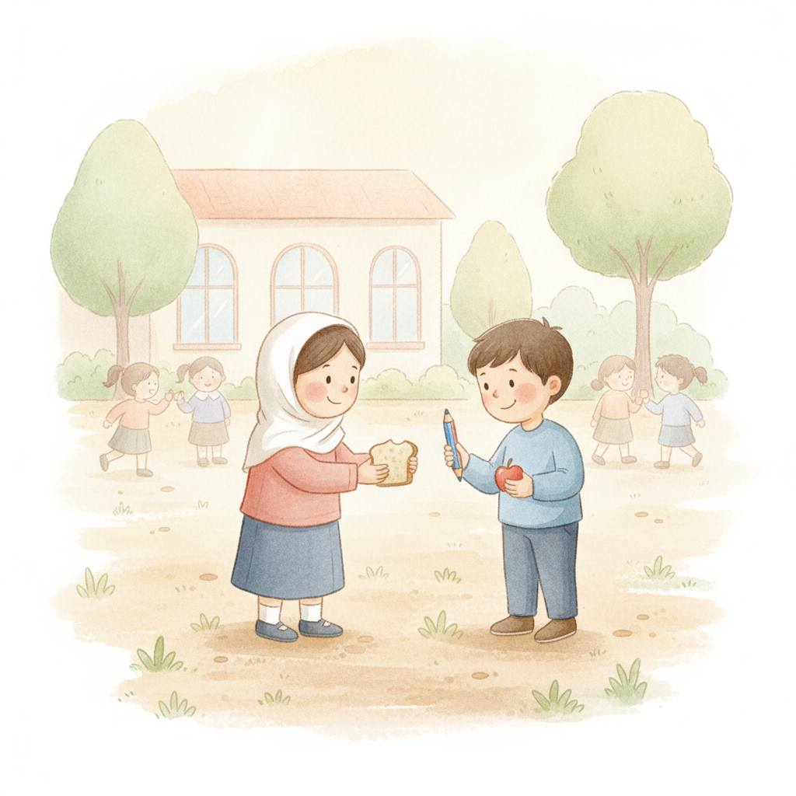
❝Sourate Al-Mâ'ûn (107)
أَرَأَيْتَ الَّذِي يُكَذِّبُ بِالدِّينِ
فَذَٰلِكَ الَّذِي يَدُعُّ الْيَتِيمَ
وَلَا يَحُضُّ عَلَىٰ طَعَامِ الْمِسْكِينِ
فَوَيْلٌ لِّلْمُصَلِّينَ
الَّذِينَ هُمْ عَن صَلَاتِهِمْ سَاهُونَ
الَّذِينَ هُمْ يُرَاءُونَ
وَيَمْنَعُونَ الْمَاعُونَ
A-ra'ayta-lladhî yukadhdhibu bid-dîn. Fadhâlika-lladhî yadu''u-l-yatîm. Wa lâ yahuddu 'alâ ta'âmi-l-miskîn. Fawaylun lil-musallîn. Alladhîna hum 'an salâtihim sâhûn. Alladhîna hum yurâ'ûn. Wa yamna'ûna-l-mâ'ûn.
« Vois-tu celui qui traite de mensonge la Rétribution ? C'est bien lui qui repousse l'orphelin, et qui n'encourage point à nourrir le pauvre. Malheur donc, à ceux qui prient, tout en négligeant (et retardant) leur prière (As-Salât), qui sont pleins d'ostentation, et refusent l'ustensile (à celui qui en a besoin). »
Sourate Al-Mâ'ûn (107), versets 1 à 7 — trad. M. Hamidullah
▶️ Écouter la récitation
💬Qu'est-ce que cela veut dire ?
Cette sourate parle d'une personne qui, en apparence, prie — mais dont la prière ne change rien à son comportement. Elle repousse l'orphelin au lieu de s'en occuper, elle n'encourage pas à nourrir celui qui a faim, et elle refuse même de prêter le mâ'ûn : les petits objets du quotidien qu'on se prête entre voisins (une casserole, un peu de sel, une aiguille...).
Allah nous enseigne ici que la vraie foi ne s'arrête pas à la prière : elle doit se voir dans la façon dont je traite les plus fragiles autour de moi.
✦3 idées essentielles
1La foi ne se limite pas à la prière : Allah juge aussi ce que je fais pour les plus fragiles (l'orphelin, le pauvre).
2Prier sans que mon cœur ni mes gestes ne changent, c'est comme prier « pour être vu » (riyâ') : Allah veut une prière sincère qui transforme mon comportement.
3Partager le mâ'ûn — les petites choses du quotidien — est un acte de foi tout simple que je peux poser cette semaine, sans qu'on me le demande.
Semaine 2 · Aqîda
🕌 Croyance
Allah, le Créateur et Maître de toute choseاللهُ الْخَالِق
◎Ce que je vais apprendre
- Comprendre qu'Allah seul est le Créateur et le Maître de tout ce qui existe.
- Découvrir le sens du mot « Rabb » et du nom Al-Khâliq.
- Apprendre à reconnaître les bienfaits d'Allah dans ma vie de tous les jours.
✎L'histoire de Nour
Dans le jardin, Nour observe une petite graine plantée quelques semaines plus tôt : une pousse verte est apparue. « Comment sait-elle qu'il faut grandir vers le haut ? » demande Nour à sa maîtresse. « Et qui fait tomber la pluie qui l'a fait pousser ? »
Sa maîtresse sourit : « Personne d'autre qu'Allah ne fait tout cela. C'est Lui qui crée chaque chose et qui s'en occupe : la graine, la pluie, le soleil… et même ton cœur qui bat sans que tu aies besoin d'y penser. On appelle cela la Rubûbiyya : Allah seul est le Rabb, le Seigneur qui crée, nourrit et prend soin de tout. »
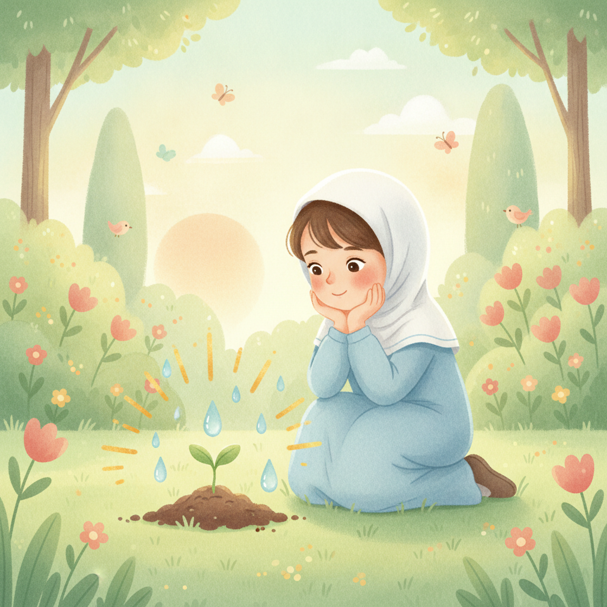
❝Ce que dit le Coran
اللَّهُ خَالِقُ كُلِّ شَيْءٍ ۖ وَهُوَ عَلَىٰ كُلِّ شَيْءٍ وَكِيلٌ
Allâhu khâliqu kulli shay'in wa huwa 'alâ kulli shay'in wakîl.
« Allah est le Créateur de toute chose, et de toute chose Il est Garant. »
Sourate Az-Zumar (39), extrait du verset 62 — trad. M. Hamidullah
💬Qu'est-ce que cela veut dire ?
Le mot Rabb veut dire « Seigneur » : Celui qui crée, qui donne la vie, qui nourrit et qui prend soin de toute chose, sans jamais s'arrêter et sans que personne d'autre ne puisse l'aider dans cette tâche. Allah est aussi Al-Khâliq, le Créateur : de l'univers tout entier jusqu'au plus petit détail de ta journée.
Cette croyance s'appelle la Rubûbiyya : reconnaître qu'Allah seul fait tout cela, sans associé.
✦Et toi ?
Ferme les yeux un instant et pense à trois choses qu'Allah t'a données aujourd'hui sans que tu aies eu besoin de les Lui demander : ta respiration, la lumière du jour, une personne qui t'aime. Dis en toi-même « Al-hamdu lillâh » (louange à Allah) pour chacune d'elles.
✎Activité
Dessine trois bienfaits d'Allah que tu remarques autour de toi aujourd'hui (le soleil, un arbre, ta famille…) et écris sous chacun : « C'est Allah qui l'a créé. »
💡Le savais-tu ?
Ton cœur bat environ 100 000 fois par jour, sans que tu aies jamais eu besoin d'y penser ni de le lui demander. C'est un des innombrables signes qu'Allah, le Rabb, prend soin de toi à chaque instant.
✏Je m'exerce
1. D'après le verset, qui est le Créateur de toute chose ?
Réponse : Allah seul.
2. Que veut dire le mot « Rabb » ?
Réponse : Seigneur, Celui qui crée, nourrit et prend soin de toute chose.
3. Cite un exemple de chose qu'Allah fait chaque jour sans qu'on ait besoin de le Lui demander.
Réponse : Par exemple : faire battre mon cœur, faire lever le soleil, faire pousser les plantes grâce à la pluie.
★À retenir
« Allah seul crée et prend soin de tout ce qui existe : chaque jour, je Lui suis reconnaissant pour Ses bienfaits. »
✎Vocabulaire
Rabb : Seigneur, Celui qui crée et prend soin. رَبّ
Khâliq : le Créateur. خَالِق
Rubûbiyya : croire qu'Allah seul est le Seigneur de toute chose. رُبُوبِيَّة
Shukr : la gratitude envers Allah. شُكْر
Semaine 3 · Fiqh
💧 La pratique
La petite ablutionالْوُضُوء
◎Ce que je vais apprendre
- Découvrir les gestes essentiels de la petite ablution (wudû).
- Comprendre pourquoi on se purifie avant de prier.
- Refaire les gestes du wudû dans le bon ordre, avec calme et intention.
✎L'histoire de Nour
Avant la prière du 'asr, Nour rejoint son grand frère près du point d'eau. « Regarde bien, lui dit-il, je vais te montrer les gestes du wudû, dans l'ordre, comme nous l'a enseigné notre maître. » Nour observe : d'abord une intention silencieuse dans le cœur, puis le visage, les mains jusqu'aux coudes, la tête, et enfin les pieds jusqu'aux chevilles — sans s'arrêter entre chaque geste.
« Ce n'est pas juste se laver, précise son frère. C'est se préparer, dans son corps et dans son cœur, à se tenir devant Allah. »
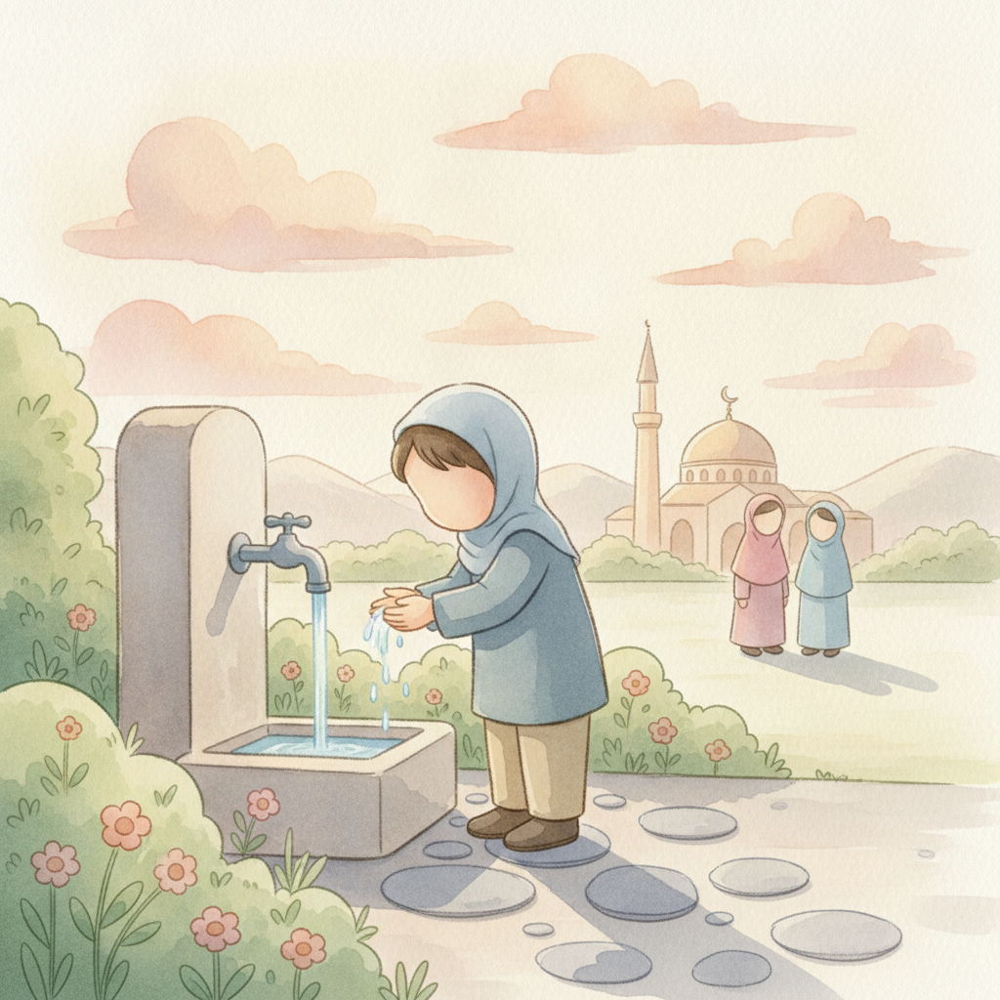
❝Le fondement dans le Coran
يَا أَيُّهَا الَّذِينَ آمَنُوا إِذَا قُمْتُمْ إِلَى الصَّلَاةِ فَاغْسِلُوا وُجُوهَكُمْ وَأَيْدِيَكُمْ إِلَى الْمَرَافِقِ وَامْسَحُوا بِرُءُوسِكُمْ وَأَرْجُلَكُمْ إِلَى الْكَعْبَيْنِ
Yâ ayyuha-lladhîna âmanû idhâ qumtum ila-s-salâti faghsilû wujûhakum wa aydiyakum ila-l-marâfiqi wamsahû biru'ûsikum wa arjulakum ila-l-ka'bayn.
« Ô les croyants ! Lorsque vous vous levez pour la prière (As-Salât), lavez vos visages et vos mains jusqu'aux coudes ; passez les mains mouillées sur vos têtes ; et lavez-vous les pieds jusqu'aux chevilles. »
Sourate Al-Mâ'ida (5), extrait du verset 6 — trad. M. Hamidullah
💬Les gestes essentiels du wudû
D'après le verset ci-dessus et l'école malikite, voici les gestes, dans l'ordre, sans s'arrêter entre eux :
1L'intention (niyya) : je décide en silence, dans mon cœur, de faire le wudû pour prier.
2Le visage : je le lave entièrement, du haut du front au menton.
3Les mains et les bras : je les lave jusqu'aux coudes, en frottant bien.
4La tête : je passe mes mains mouillées dessus.
5Les pieds : je les lave jusqu'aux chevilles, en frottant entre les orteils.
D'après le Précis de Fiqh Malikite (Corentin Pabiot), l'école malikite ajoute trois conditions à ces gestes : formuler l'intention, frotter (et non seulement laisser couler l'eau), et enchaîner les gestes sans grande pause entre eux.
✦Et toi ?
La prochaine fois que tu fais le wudû, essaie de ne pas te dépêcher : prends le temps de penser à Allah pendant que tu te purifies. Un corps propre pour une prière où le cœur, lui aussi, se prépare à être attentif.
✎Activité
Avec un adulte, refais les cinq gestes du wudû dans l'ordre en les nommant à voix haute. Puis dessine la suite des gestes dans ton carnet, comme une bande dessinée en 5 cases.
💡Le savais-tu ?
Selon l'école malikite, chaque geste du wudû peut être répété jusqu'à trois fois, mais pas plus — pour éviter de gaspiller l'eau, ce que le Prophète ﷺ déconseillait même au bord d'une rivière !
✏Je m'exerce
1. Que veut dire « wudû » ?
Réponse : La petite ablution, la purification que l'on fait avant la prière.
2. Cite dans l'ordre les gestes du wudû, après l'intention.
Réponse : Le visage, les mains et bras jusqu'aux coudes, la tête, les pieds jusqu'aux chevilles.
3. Que doit-on faire avant même de toucher l'eau ?
Réponse : Formuler l'intention (niyya) en silence, dans son cœur.
★À retenir
« Avant de me tenir devant Allah dans la prière, je purifie mon corps par le wudû — et je purifie aussi mon cœur en pensant à Lui. »
✎Vocabulaire
Wudû : la petite ablution. وُضُوء
Niyya : l'intention formulée dans le cœur. نِيَّة
Tahâra : la pureté rituelle. طَهَارَة
Semaine 4 · Sîra
🕋 La vie du Prophète ﷺ
Le début de la révélationبِدَايَةُ الْوَحْي
◎Ce que je vais apprendre
- Découvrir où et comment le Prophète ﷺ a reçu les tout premiers versets du Coran.
- Connaître le rôle de l'ange Jibrîl et le soutien de son épouse Khadîja.
- Réfléchir à l'importance d'avoir quelqu'un de confiance quand on a peur.
✎L'histoire de Nour
Nour demande un soir à son père : « Comment le Coran a-t-il commencé ? » Son père lui raconte alors une histoire extraordinaire.
Avant de devenir prophète, Muhammad ﷺ aimait se retirer dans une grotte au sommet du mont Hirâ', près de La Mecque, pour réfléchir en silence. Il avait 40 ans. Un jour, dans cette grotte, un ange qu'il n'avait jamais vu lui apparaît : c'est Jibrîl. L'ange lui dit : « Iqra' ! » — « Lis ! » Muhammad ﷺ répond qu'il ne sait pas lire, car il n'avait jamais appris. L'ange insiste, et c'est alors que les tout premiers versets du Coran lui sont révélés.
Bouleversé, Muhammad ﷺ redescend en tremblant et rentre chez lui. Son épouse Khadîja, la première à croire en lui, le rassure avec douceur et l'accompagne pour comprendre ce qui vient de se passer. Grâce à sa confiance et à son soutien, Muhammad ﷺ retrouve son calme.
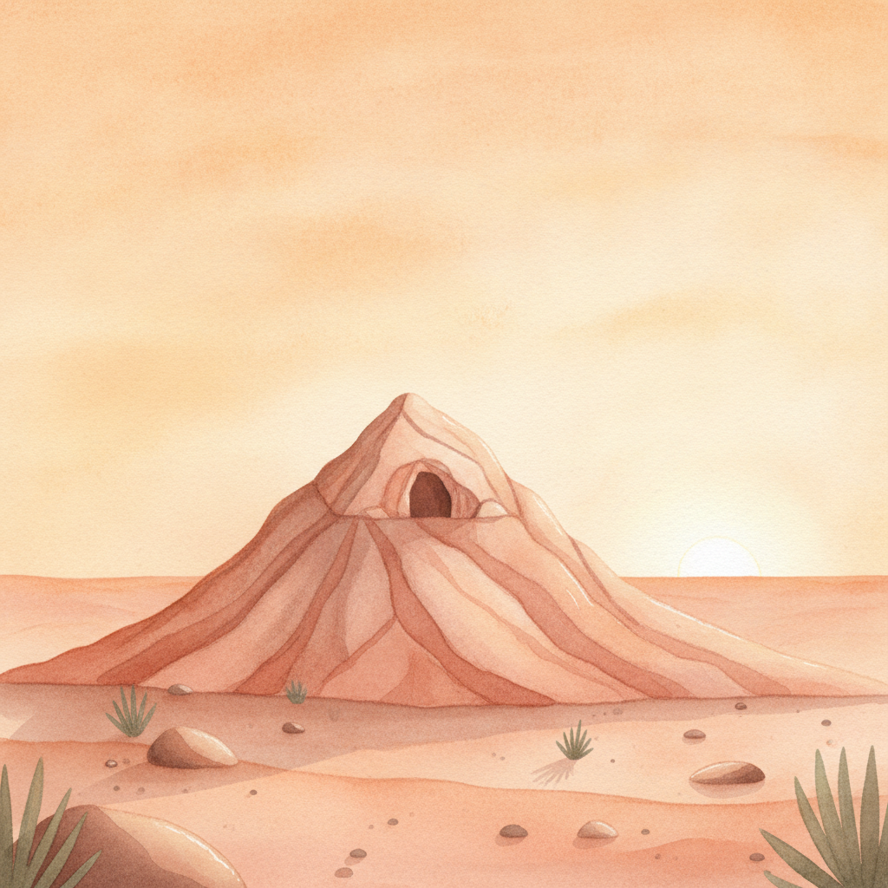
❝Les tout premiers versets révélés
اقْرَأْ بِاسْمِ رَبِّكَ الَّذِي خَلَقَ
خَلَقَ الْإِنسَانَ مِنْ عَلَقٍ
اقْرَأْ وَرَبُّكَ الْأَكْرَمُ
الَّذِي عَلَّمَ بِالْقَلَمِ
عَلَّمَ الْإِنسَانَ مَا لَمْ يَعْلَمْ
Iqra' bismi rabbika-lladhî khalaq. Khalaqa-l-insâna min 'alaq. Iqra' wa rabbuka-l-akram. Alladhî 'allama bil-qalam. 'Allama-l-insâna mâ lam ya'lam.
« Lis, au nom de ton Seigneur qui a créé, qui a créé l'homme d'une adhérence. Lis ! Ton Seigneur est le Très Noble, qui a enseigné par la plume [le calame], a enseigné à l'homme ce qu'il ne savait pas. »
Sourate Al-'Alaq (96), versets 1 à 5 — trad. M. Hamidullah
▶️ Écouter la récitation (playlist Juz 'Amma)
💬Qu'est-ce que cela veut dire ?
Le tout premier mot du Coran, révélé dans la grotte de Hirâ', est un ordre : « Lis ! » Allah rappelle qu'Il a créé l'homme et qu'Il lui a enseigné ce qu'il ne savait pas, par la plume — c'est-à-dire par l'écriture, l'étude, la connaissance.
Ce jour-là, Muhammad ﷺ a eu peur de ce qu'il vivait. Mais il n'était pas seul : Khadîja, sa femme, a cru en lui immédiatement et l'a soutenu avec tendresse.
✦Et toi ?
T'est-il déjà arrivé d'avoir peur ou de ne pas comprendre quelque chose de nouveau ? À qui peux-tu en parler en confiance — un parent, un enseignant, un ami ? Et toi, sais-tu être cette personne rassurante pour quelqu'un d'autre, comme Khadîja l'a été pour le Prophète ﷺ ?
✎Activité
Dessine la grotte de Hirâ' au sommet de la montagne, ou écris le nom d'une personne de confiance à qui tu peux parler quand tu as peur ou une question.
💡Le savais-tu ?
Le tout premier mot révélé de l'ensemble du Coran est « Iqra' », c'est-à-dire « Lis ! » — un appel à apprendre, dès le tout début du message adressé au Prophète ﷺ !
✏Je m'exerce
1. Dans quelle grotte le Prophète ﷺ a-t-il reçu les premiers versets ?
Réponse : La grotte de Hirâ', au sommet d'une montagne près de La Mecque.
2. Quel ange est venu lui parler ?
Réponse : L'ange Jibrîl.
3. Quel est le tout premier mot révélé du Coran ?
Réponse : « Iqra' », qui veut dire « Lis ! ».
4. Qui a réconforté le Prophète ﷺ à son retour de la grotte ?
Réponse : Son épouse Khadîja.
★À retenir
« Le premier mot du Coran est un appel à apprendre : je cherche chaque jour à apprendre, avec confiance en Allah et le soutien de ceux qui m'aiment. »
✎Vocabulaire
Wahy : la révélation divine. وَحْي
Ghâr Hirâ' : la grotte de Hirâ'. غَار حِرَاء
Jibrîl : l'ange de la révélation (Gabriel). جِبْرِيل
Iqra' : « Lis ! », premier mot révélé. اقْرَأْ
Semaine 5 · Hadith & Adab
🤝 Le fil rouge du hadith
Les actions valent par les intentionsالْأَعْمَالُ بِالنِّيَّات
◎Ce que je vais apprendre
- Découvrir l'un des hadiths les plus connus et les plus fondamentaux.
- Comprendre que la valeur d'une action dépend de l'intention du cœur.
- Faire le lien avec la niyya apprise dans le chapitre sur le wudû.
✎L'histoire de Nour
Nour range sa chambre et celle de sa petite sœur pendant que leur mère prépare le repas. Un camarade en visite lui demande : « Tu fais ça pour que ta maman te félicite ? » Nour s'arrête un instant, surpris par la question. Il n'y avait pas vraiment pensé.
Le soir, il en parle à son grand-père, qui lui sourit : « Il existe un hadith très célèbre à ce sujet — tellement important que de nombreux savants l'ont placé en tout premier dans leurs livres, avant tous les autres. »
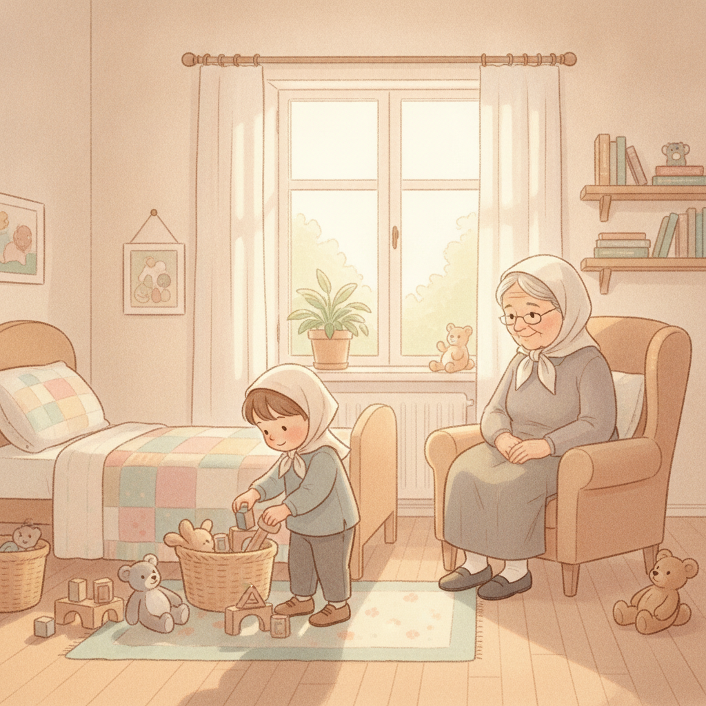
❝Le hadith des intentions
إِنَّمَا الْأَعْمَالُ بِالنِّيَّاتِ، وَإِنَّمَا لِكُلِّ امْرِئٍ مَا نَوَى
Innama-l-a'mâlu bin-niyyât, wa innamâ likulli-mri'in mâ nawâ.
« Les actions ne valent que par les intentions, et chacun n'aura que ce qu'il aura eu l'intention de faire. »
Sahîh al-Bukhârî, n°1 & Sahîh Muslim, n°1907 — d'après 'Umar Ibn al-Khattâb
💬Qu'est-ce que cela veut dire ?
Deux enfants peuvent faire exactement le même geste — ranger une chambre, aider un camarade, faire l'aumône — et pourtant, ce geste n'aura pas la même valeur devant Allah. Ce qui compte, c'est pourquoi on le fait : pour plaire à Allah, ou seulement pour être vu et félicité.
C'est pour cela que la niyya (l'intention), déjà rencontrée dans le wudû, est si importante : elle donne son vrai sens à chacun de nos actes.
✦Et toi ?
Choisis une petite action que tu fais aujourd'hui — ranger, aider, bien te comporter en classe — et, juste avant de la faire, dis en silence dans ton cœur : « Je fais cela pour Allah. » Remarque si cela change quelque chose dans ta façon de le faire.
✎Activité
Écris ou raconte à un adulte une action que tu as faite récemment. Discute ensemble : pour qui l'as-tu faite ? Comment aurait-elle pu être faite « pour Allah » plutôt que pour être vu ?
💡Le savais-tu ?
Beaucoup de grands savants de l'islam commençaient leurs livres par ce hadith, pour rappeler à leurs élèves que même chercher à apprendre doit se faire sincèrement, pour Allah.
✏Je m'exerce
1. Que veut dire « niyya » ?
Réponse : L'intention, ce que l'on décide dans son cœur avant d'agir.
2. D'après le hadith, qu'est-ce qui donne sa valeur à une action ?
Réponse : L'intention avec laquelle elle est faite.
3. Donne un exemple d'action que tu peux faire pour Allah plutôt que pour être vu.
Réponse : Par exemple : aider un camarade sans le dire à personne, ranger sans qu'on te le demande, être poli même quand personne ne regarde.
★À retenir
« Ce n'est pas seulement ce que je fais qui compte, c'est pourquoi je le fais : je renouvelle mon intention pour Allah. »
✎Vocabulaire
Niyya : l'intention du cœur. نِيَّة
'Amal : une action, un acte. عَمَل
Ikhlâs : la sincérité, faire les choses uniquement pour Allah. إِخْلَاص
Semaine 6 · Coran
📗 Le Coran
Les flammes de la haineشُعْلَةُ الْكَرَاهِيَة
❝Sourate Al-Masad (111)
تَبَّتْ يَدَآ أَبِى لَهَبٍ وَتَبَّ
مَآ أَغْنَىٰ عَنْهُ مَالُهُۥ وَمَا كَسَبَ
سَيَصْلَىٰ نَارًا ذَاتَ لَهَبٍ
وَٱمْرَأَتُهُۥ حَمَّالَةَ ٱلْحَطَبِ
فِى جِيدِهَا حَبْلٌ مِّن مَّسَدٍ
Tabbat yadâ Abî Lahabin wa tabb. Mâ aghnâ 'anhu mâluhu wa mâ kasab. Sayaslâ nâran dhâta lahab. Wamra'atuhu hammâlata-l-hatab. Fî jîdihâ hablun min masad.
« Que périssent les deux mains d'Abû-Lahab et que lui-même périsse. Sa fortune ne lui sert à rien, ni ce qu'il a acquis. Il sera brûlé dans un Feu plein de flammes ; de même sa femme, la porteuse de bois, à son cou, une corde de fibres. »
Sourate Al-Masad (111), versets 1 à 5 — trad. M. Hamidullah
▶️ Écouter la récitation (playlist Cheikh Al-Husary — Juz 'Amma)
💬Qu'est-ce que cela veut dire ?
Cette sourate a été révélée au sujet d'Abû Lahab, l'oncle du Prophète ﷺ, qui s'est violemment opposé à lui et l'a moqué dès le début de la révélation. Sa femme l'aidait dans cette hostilité. Allah annonce ici qu'aucune richesse, aucune position sociale ne pourra les protéger de la conséquence de leur rejet obstiné de la vérité.
C'est la seule sourate du Coran qui nomme une personne précise pour annoncer sa perte : un avertissement très fort sur ce que la haine et l'orgueil peuvent provoquer dans le cœur.
✦3 idées essentielles
1Ni l'argent ni le statut social ne protègent quelqu'un du choix de rejeter la vérité : seule compte la sincérité du cœur devant Allah.
2La haine et le rejet obstiné peuvent conduire une personne à agir contre son propre intérêt : Abû Lahab avait tout à gagner à écouter, il a choisi de s'opposer.
3Allah connaît et voit chaque cœur, même celui d'un proche du Prophète ﷺ : je Lui demande de garder mon cœur loin de l'orgueil et de la rancune envers les autres.
Semaine 7 · Aqîda
🕌 Croyance
As-Samî' et Al-Basîr — Allah entend et voit toutالسَّمِيعُ الْبَصِير
◎Ce que je vais apprendre
- Découvrir deux noms d'Allah : As-Samî' (Celui qui entend tout) et Al-Basîr (Celui qui voit tout).
- Comprendre que rien n'échappe à Allah, même ce que je pense être secret.
- Réfléchir à ce que cela change dans mon comportement quand je suis seul.
✎L'histoire de Nour
Un soir, Nour est seule dans sa chambre. Personne ne regarde, personne n'écoute... Nour hésite à dire un petit mensonge à sa sœur pour éviter une punition. Puis elle se souvient d'une leçon : même quand aucun humain ne me voit, Allah, Lui, voit et entend absolument tout.
« Ce n'est pas pour avoir peur, lui explique sa mère, c'est pour se sentir accompagnée : Allah est toujours proche de toi, même dans le silence de ta chambre. » Nour choisit de dire la vérité.
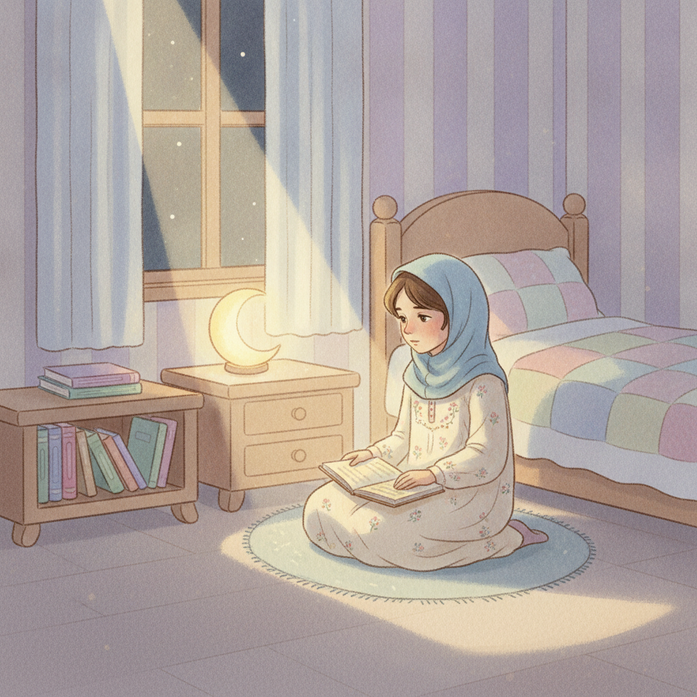
❝Ce que dit le Coran
لَيْسَ كَمِثْلِهِۦ شَىْءٌ ۖ وَهُوَ ٱلسَّمِيعُ ٱلْبَصِيرُ
Laysa kamithlihi shay'un wa huwa-s-samî'u-l-basîr.
« Il n'y a rien qui Lui ressemble ; et c'est Lui l'Audient, le Clairvoyant. »
Sourate Ash-Shûrâ (42), extrait du verset 11 — trad. M. Hamidullah
💬Qu'est-ce que cela veut dire ?
As-Samî' veut dire que rien de ce qui se dit, même le plus discret des chuchotements, n'échappe à Allah. Al-Basîr veut dire que rien de ce qui se fait, même dans l'obscurité la plus totale, n'échappe à Son regard.
Contrairement à l'audition et à la vue des créatures, celles d'Allah sont parfaites : Il entend et voit tout, en même temps, sans jamais se fatiguer ni se tromper.
✦Et toi ?
La prochaine fois que tu es seul(e) et que personne ne te voit, souviens-toi qu'Allah, Lui, te voit et t'entend. Cela peut t'aider à faire le bon choix même quand c'est plus facile de faire autrement.
✎Activité
Ferme les yeux et pense à un moment où tu étais seul(e) aujourd'hui. Dis à voix basse : « Allah me voit et m'entend en ce moment même », puis remercie-Le pour Sa proximité.
💡Le savais-tu ?
As-Samî' et Al-Basîr font partie des « plus beaux noms » d'Allah (Al-Asmâ' al-Husnâ) que les musulmans apprennent à connaître et à invoquer.
✏Je m'exerce
1. Que veut dire le nom « As-Samî' » ?
Réponse : Celui qui entend tout, même le plus discret des chuchotements.
2. Que veut dire le nom « Al-Basîr » ?
Réponse : Celui qui voit tout, même dans l'obscurité totale.
3. Pourquoi est-ce utile de se souvenir qu'Allah voit et entend tout quand je suis seul(e) ?
Réponse : Cela m'aide à bien me comporter même quand personne d'autre ne me regarde, car je sais qu'Allah, Lui, me voit toujours.
★À retenir
« Allah entend tout ce que je dis et voit tout ce que je fais, même quand je suis seul(e) : Il est toujours proche de moi. »
✎Vocabulaire
As-Samî' : Celui qui entend tout. السَّمِيع
Al-Basîr : Celui qui voit tout. الْبَصِير
Al-Asmâ' al-Husnâ : les plus beaux noms d'Allah. الْأَسْمَاءُ الْحُسْنَى
Semaine 8 · Fiqh
💧 Vie pratique
Ce qui annule le wudûنَوَاقِضُ الْوُضُوء
◎Ce que je vais apprendre
- Connaître les situations les plus courantes qui annulent le wudû.
- Comprendre pourquoi il faut refaire le wudû dans ces cas-là.
- Prendre l'habitude de vérifier mon wudû avant chaque prière.
✎L'histoire de Nour
Nour a fait son wudû juste avant le repas de midi. Après avoir mangé, elle s'endort profondément sur le canapé pendant une longue sieste. En se réveillant, l'heure de la prière approche : Nour se dirige directement vers son tapis de prière.
« Attends, lui dit son grand frère en souriant, tu as dormi longtemps : il faut refaire ton wudû avant de prier ! » Nour comprend alors que le wudû ne dure pas éternellement : certaines choses l'annulent.
💬Qu'est-ce qui annule le wudû ?
Dans l'école malikite, on retient surtout ces situations simples pour un enfant :
1Aller aux toilettes (petits ou gros besoins).
2Faire sortir un gaz (pet).
3S'endormir profondément, au point de ne plus se rendre compte de ce qui m'entoure.
4Toucher directement ses parties intimes avec la paume de la main, sans tissu entre les deux.
D'après le Précis de Fiqh Malikite (C. Pabiot) — contenu reformulé et simplifié pour les enfants.
✦Et toi ?
Avant de prier, prends l'habitude de te demander : « Depuis mon dernier wudû, ai-je fait l'une de ces choses ? » Si oui, je refais mon wudû avec calme, sans stress : Allah aime que je Le rencontre dans un état de pureté.
✎Activité
Avec un adulte, fabrique une petite affiche avec les 4 situations qui annulent le wudû, à coller près de ton coin prière pour t'en souvenir.
💡Le savais-tu ?
Le wudû ne s'annule pas si tu touches juste un objet, un animal, ou même un aliment : ce sont uniquement certaines situations précises qui l'annulent, pas n'importe quel contact.
✏Je m'exerce
1. Cite deux situations qui annulent le wudû.
Réponse : Par exemple : aller aux toilettes, et faire sortir un gaz.
2. Nour dort profondément après le repas : que doit-elle faire avant de prier ?
Réponse : Refaire son wudû, car le sommeil profond l'a annulé.
3. Pourquoi refait-on le wudû dans ces cas-là ?
Réponse : Pour se présenter devant Allah dans un état de pureté avant la prière.
★À retenir
« Avant chaque prière, je vérifie que mon wudû est toujours valable : sinon, je le refais avec calme. »
✎Vocabulaire
Nâqid : ce qui annule le wudû. نَاقِض
Tahâra : l'état de pureté rituelle. طَهَارَة
Semaine 9 · Sîra
🕋 Vie du Prophète ﷺ
Khadîja et les premiers croyantsخَدِيجَة وَأَوَّلُ الْمُؤْمِنِين
◎Ce que je vais apprendre
- Découvrir qui étaient les tout premiers musulmans.
- Comprendre le rôle essentiel de Khadîja auprès du Prophète ﷺ.
- Apprendre à soutenir les personnes que j'aime dans les moments difficiles.
✎L'histoire de Nour
« Après la première révélation dans la grotte de Hirâ', le Prophète ﷺ est rentré tremblant chez lui, » raconte la maîtresse de Nour. « Qui l'a accueilli et rassuré en premier ? » demande Nour. « Son épouse Khadîja, répond la maîtresse. Elle l'a couvert d'un vêtement, l'a réconforté, et a été la toute première personne à croire en son message. »
Après elle, d'autres proches ont cru sans hésiter : Abû Bakr, son ami fidèle ; 'Alî, encore un jeune enfant ; et Zayd, qui vivait dans sa maison. Ensemble, ils ont formé le tout premier petit groupe de croyants.
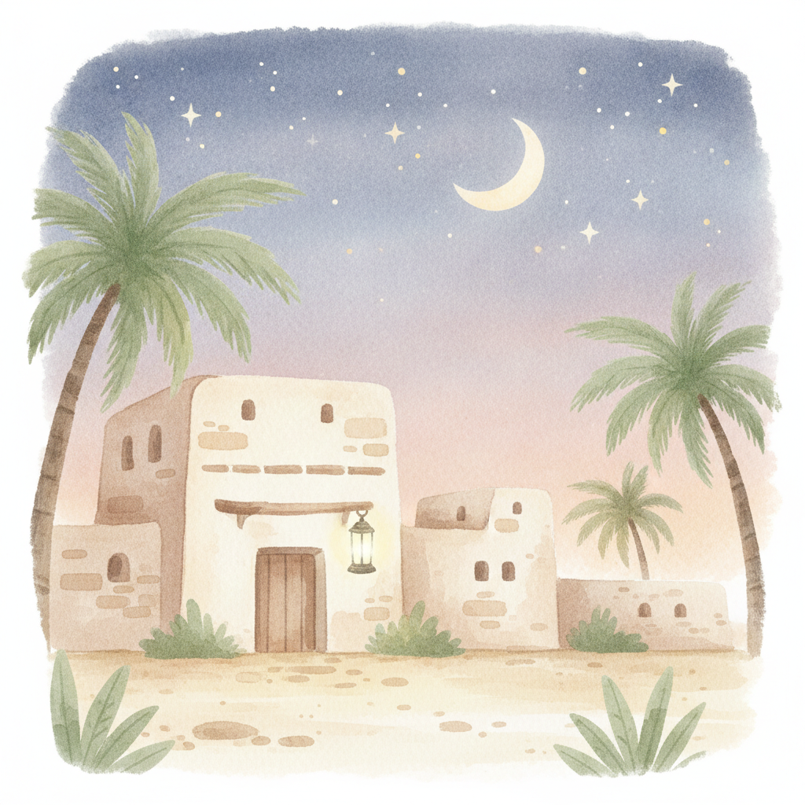
💬Qu'est-ce que cela veut dire ?
Khadîja bint Khuwaylid était une commerçante respectée de La Mecque. Elle a soutenu le Prophète ﷺ financièrement, moralement et affectivement pendant les moments les plus difficiles du début de la révélation. On l'appelle Umm al-Mu'minîn, « la mère des croyants ».
Abû Bakr, 'Alî et Zayd ibn Hâritha comptent parmi les tout premiers à avoir cru au message du Prophète ﷺ, à un moment où très peu de monde le soutenait. Leur confiance et leur courage nous montrent l'importance de croire avec le cœur, même quand on est peu nombreux.
✦Et toi ?
Khadîja a soutenu le Prophète ﷺ dans un moment où il en avait le plus besoin. Pense à une personne de ta famille ou de tes amis qui traverse un moment difficile : comment peux-tu, toi aussi, la rassurer et la soutenir ?
✎Activité
Dessine ou écris le nom des quatre premiers croyants cités dans cette leçon : Khadîja, Abû Bakr, 'Alî et Zayd.
💡Le savais-tu ?
Khadîja est restée l'épouse unique du Prophète ﷺ pendant 25 ans, jusqu'à sa mort. Il l'a toujours gardée dans son cœur et parlait d'elle avec beaucoup d'affection, même des années après.
✏Je m'exerce
1. Qui a été la toute première personne à croire au message du Prophète ﷺ ?
Réponse : Son épouse Khadîja.
2. Comment appelle-t-on Khadîja en tant qu'épouse du Prophète ﷺ ?
Réponse : Umm al-Mu'minîn, « la mère des croyants ».
3. Cite un autre premier croyant en dehors de Khadîja.
Réponse : Par exemple : Abû Bakr, 'Alî, ou Zayd ibn Hâritha.
★À retenir
« Khadîja a soutenu le Prophète ﷺ dans les moments difficiles : moi aussi, je peux soutenir les personnes que j'aime. »
✎Vocabulaire
Umm al-Mu'minîn : « la mère des croyants », titre donné aux épouses du Prophète ﷺ. أُمُّ الْمُؤْمِنِين
Sahâba : les compagnons du Prophète ﷺ. صَحَابَة
Semaine 10 · Hadith & Adab
🤝 Bonnes manières
Le sourire est une aumôneالتَّبَسُّمُ صَدَقَة
◎Ce que je vais apprendre
- Découvrir un hadith sur la valeur du sourire.
- Comprendre que la générosité ne se limite pas à donner de l'argent.
- Prendre l'habitude de sourire aux gens que je croise.
✎L'histoire de Nour
Nour n'a pas d'argent de poche cette semaine et se sent triste de ne rien pouvoir donner à la collecte de solidarité organisée par son école. « Je n'ai rien à offrir », dit-elle à son grand-père. Il lui sourit et lui répond : « Tu as bien plus que tu ne le penses, ma fille. »
Il lui rappelle alors les paroles du Prophète ﷺ : même un sourire sincère compte comme une aumône devant Allah. Nour comprend qu'elle peut donner quelque chose de précieux, chaque jour, sans avoir besoin d'argent.
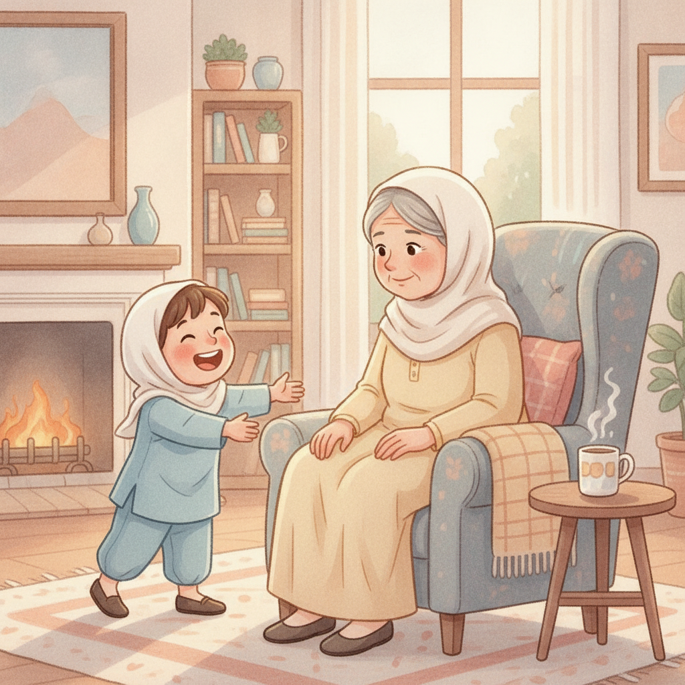
❝Un hadith du Prophète ﷺ
تَبَسُّمُكَ فِي وَجْهِ أَخِيكَ لَكَ صَدَقَةٌ
Tabassumuka fî wajhi akhîka laka sadaqa.
Ton sourire adressé à ton frère est une aumône pour toi.
D'après At-Tirmidhî — rendu en français par nos soins, d'après le sens du hadith
💬Qu'est-ce que cela veut dire ?
La sadaqa (aumône) fait généralement penser à donner de l'argent ou de la nourriture. Mais le Prophète ﷺ nous enseigne que de nombreuses bonnes actions simples comptent aussi comme des aumônes devant Allah : un sourire sincère, une parole douce, un geste d'aide.
Cela veut dire que personne n'est jamais « trop pauvre » pour être généreux : chacun peut donner quelque chose, tous les jours.
✦Et toi ?
Demain, essaie de sourire sincèrement à trois personnes différentes : un membre de ta famille, un camarade de classe, un voisin. Observe comment ton sourire peut changer leur journée — et la tienne.
✎Activité
Dessine un visage souriant et écris autour : trois personnes à qui tu vas sourire cette semaine.
💡Le savais-tu ?
Le Prophète ﷺ était connu pour être toujours souriant avec ses compagnons, même dans les moments difficiles. Son sourire mettait les gens à l'aise et leur donnait confiance.
✏Je m'exerce
1. D'après le hadith, que représente un sourire sincère ?
Réponse : Une aumône (sadaqa).
2. Nour pense qu'elle n'a « rien à offrir » : que lui répond son grand-père ?
Réponse : Qu'elle a bien plus qu'elle ne le pense, car même un sourire compte comme une aumône.
3. Cite une autre bonne action simple, en dehors du sourire, qui peut compter comme une aumône.
Réponse : Par exemple : une parole douce, un geste d'aide, retirer un obstacle du chemin.
★À retenir
« Je n'ai pas besoin d'argent pour être généreux : un sourire sincère est déjà une aumône devant Allah. »
✎Vocabulaire
Sadaqa : aumône, don fait par générosité. صَدَقَة
Tabassum : le sourire. تَبَسُّم
Semaine 11 · Coran
📗 Le Coran
La course aux richessesالتَّكَاثُر
❝Sourate At-Takâthur (102)
أَلْهَىٰكُمُ التَّكَاثُرُ
حَتَّىٰ زُرْتُمُ الْمَقَابِرَ
كَلَّا سَوْفَ تَعْلَمُونَ
ثُمَّ كَلَّا سَوْفَ تَعْلَمُونَ
كَلَّا لَوْ تَعْلَمُونَ عِلْمَ الْيَقِينِ
لَتَرَوُنَّ الْجَحِيمَ
ثُمَّ لَتَرَوُنَّهَا عَيْنَ الْيَقِينِ
ثُمَّ لَتُسْأَلُنَّ يَوْمَئِذٍ عَنِ النَّعِيمِ
Alhâkumu-t-takâthur. Hattâ zurtumu-l-maqâbir. Kallâ sawfa ta'lamûn. Thumma kallâ sawfa ta'lamûn. Kallâ law ta'lamûna 'ilma-l-yaqîn. Latarawunna-l-jahîm. Thumma latarawunnahâ 'ayna-l-yaqîn. Thumma latus'alunna yawma'idhin 'ani-n-na'îm.
« La course aux richesses vous distrait, jusqu'à ce que vous visitiez les tombes. Mais non ! Vous saurez bientôt ! (Encore une fois) ! Vous saurez bientôt ! Sûrement ! Si vous saviez de science certaine... Vous verrez, certes, la Fournaise. Puis, vous la verrez certes, avec l'œil de certitude. Puis, assurément, vous serez interrogés, ce jour-là, sur les délices. »
Sourate At-Takâthur (102), versets 1 à 8 — trad. M. Hamidullah
▶️ Écouter la récitation (playlist Cheikh Al-Husary — Juz 'Amma)
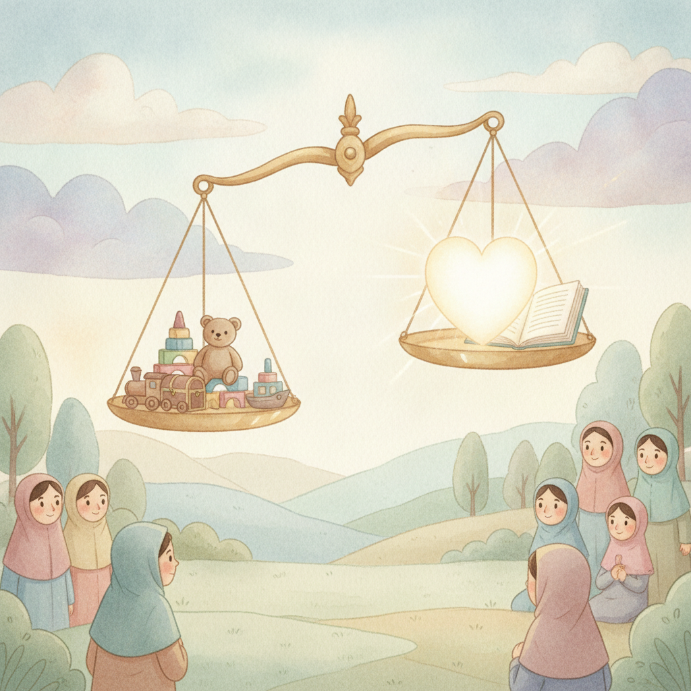
💬Qu'est-ce que cela veut dire ?
Cette sourate parle de personnes tellement occupées à vouloir posséder plus (plus de jouets, plus d'argent, plus de choses) qu'elles en oublient l'essentiel, jusqu'au jour où elles quittent ce monde. Allah nous avertit : accumuler des richesses ne sert à rien si le cœur oublie Allah et le Jour du Jugement.
La sourate rappelle aussi que chacun sera interrogé sur la façon dont il a utilisé les bienfaits qu'Allah lui a donnés.
✦3 idées essentielles
1Vouloir toujours « plus » (de jouets, d'objets) peut distraire mon cœur de ce qui compte vraiment : me souvenir d'Allah et bien agir.
2Un jour, je quitterai ce monde : les richesses accumulées ne viendront pas avec moi, seules mes bonnes actions compteront.
3Allah me demandera comment j'ai utilisé Ses bienfaits (temps, jouets, nourriture) : je peux dès maintenant apprendre à partager plutôt qu'à accumuler.
Semaine 12 · Aqîda
🕌 Croyance
Les anges qui nous accompagnentالْمَلَائِكَةُ الْحَافِظُون
◎Ce que je vais apprendre
- Découvrir que des anges nobles notent nos actions.
- Comprendre le rôle des Kirâman Kâtibîn.
- Réfléchir à ce que je voudrais voir écrit dans mon carnet d'actions.
✎L'histoire de Nour
« Est-ce que quelqu'un voit vraiment tout ce que je fais ? » demande Nour à sa maîtresse. « Oui, répond-elle : Allah a chargé deux anges nobles de noter toutes nos actions, les bonnes comme les moins bonnes. On les appelle les Kirâman Kâtibîn, "les nobles scribes". »
Nour imagine alors un petit carnet invisible qui l'accompagne partout, rempli chaque jour par ces anges. Cette idée ne lui fait pas peur : elle lui donne plutôt envie de remplir ce carnet de bonnes actions.
❝Ce que dit le Coran
وَإِنَّ عَلَيْكُمْ لَحَافِظِينَ. كِرَامًا كَاتِبِينَ
Wa inna 'alaykum lahâfizhîn. Kirâman kâtibîn.
« alors que veillent sur vous des gardiens, de nobles scribes. »
Sourate Al-Infitâr (82), versets 10 à 11 — trad. M. Hamidullah
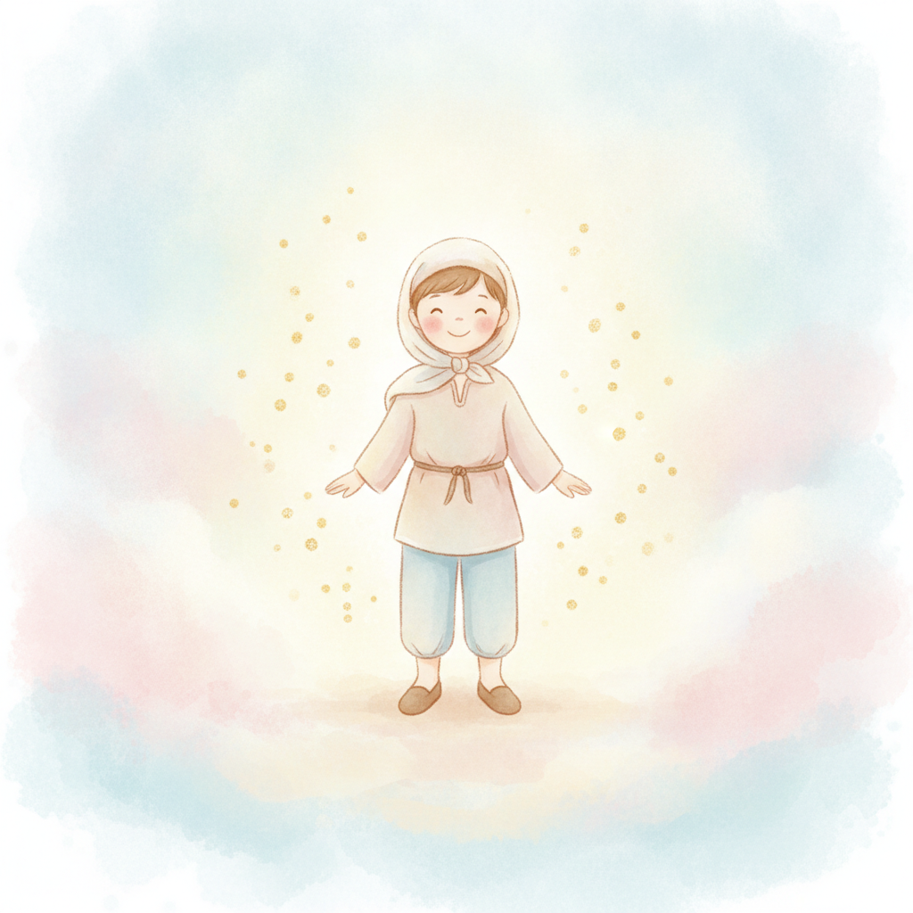
💬Qu'est-ce que cela veut dire ?
Allah a chargé deux anges d'accompagner chaque personne : l'un note les bonnes actions, l'autre les mauvaises. On ne les voit pas, mais ils sont toujours présents, avec noblesse et honnêteté, sans jamais rien oublier ni exagérer.
Ce n'est pas pour nous faire peur : c'est un rappel doux qu'Allah connaît et prend en compte chaque petit effort que je fais pour bien agir.
✦Et toi ?
Si tu savais que ton carnet d'aujourd'hui allait être lu ce soir, qu'aimerais-tu qu'il contienne ? Choisis une bonne action à poser aujourd'hui pour bien remplir ta page.
✎Activité
Dessine ton propre « carnet des anges » et écris-y une bonne action que tu as faite aujourd'hui.
💡Le savais-tu ?
Le mot « Kirâm » veut dire « nobles » : ces anges sont décrits comme nobles car ils accomplissent leur mission avec honnêteté et sans jamais juger avec sévérité.
✏Je m'exerce
1. Comment appelle-t-on les anges qui notent nos actions ?
Réponse : Les Kirâman Kâtibîn, « les nobles scribes ».
2. Que note chacun des deux anges ?
Réponse : L'un note les bonnes actions, l'autre les mauvaises.
3. Pourquoi ce rappel n'est-il pas fait pour nous faire peur ?
Réponse : Parce que c'est surtout un encouragement à bien agir, en sachant qu'Allah prend en compte chaque effort, même petit.
★À retenir
« Deux anges nobles m'accompagnent partout : je choisis de remplir mon carnet de bonnes actions. »
✎Vocabulaire
Malak (pl. Malâ'ika) : ange(s). مَلَك
Kirâman Kâtibîn : les nobles scribes qui notent nos actions. كِرَامًا كَاتِبِين
Semaine 13 · Fiqh
💧 Vie pratique
Les conditions de la prièreشُرُوطُ الصَّلَاة
◎Ce que je vais apprendre
- Découvrir les conditions à réunir avant de commencer la prière.
- Comprendre pourquoi chacune d'elles est importante.
- Vérifier ces conditions moi-même avant chaque prière.
✎L'histoire de Nour
Nour se précipite pour prier avant que l'heure ne passe, mais son grand-père l'arrête gentiment : « Attends un instant. As-tu vérifié ton wudû ? Ton vêtement est-il propre ? Ton tapis est-il propre ? Sais-tu que l'heure de la prière est bien entrée ? Et es-tu tournée vers la qibla ? »
Nour sourit : « Il y a donc plusieurs choses à vérifier avant même de commencer ! » « Exactement, répond son grand-père, ce sont les conditions de la prière : elles préparent le cadre pour que ma prière soit acceptée. »
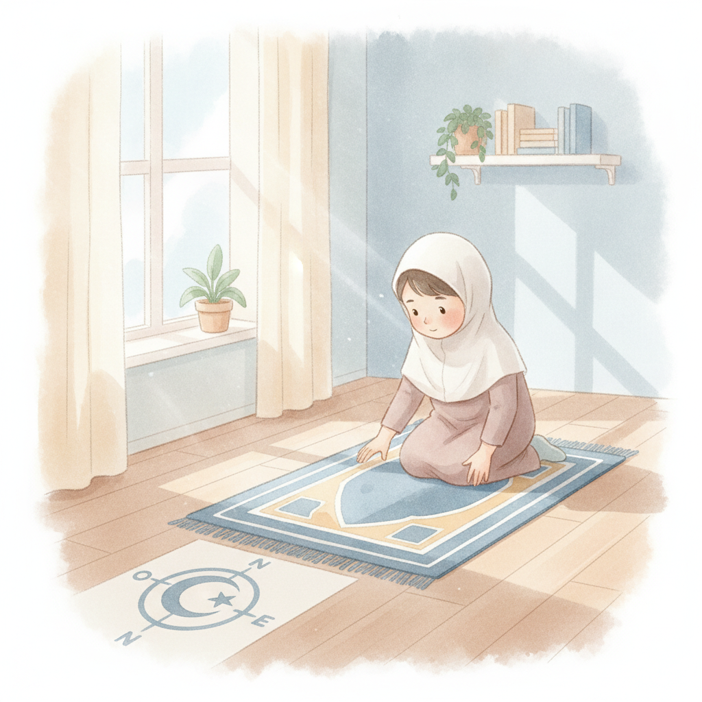
💬Les 5 conditions à vérifier
1Être en état de pureté (avoir fait son wudû).
2Porter des vêtements propres qui couvrent correctement le corps.
3Prier dans un lieu propre.
4Vérifier que l'heure de la prière est bien entrée.
5Se tourner vers la qibla, la direction de la Kaaba à La Mecque.
D'après le Précis de Fiqh Malikite (C. Pabiot) — contenu reformulé et simplifié pour les enfants.
✦Et toi ?
Avant ta prochaine prière, prends 10 secondes pour vérifier ces 5 conditions, une par une, calmement. Cette petite habitude t'aidera à prier avec plus de sérénité.
✎Activité
Avec un adulte, repère chez toi la direction de la qibla et marque-la (un petit autocollant, un dessin) près de ton coin de prière.
💡Le savais-tu ?
Aujourd'hui, de nombreuses applications et boussoles permettent de connaître très précisément la direction de la qibla, où que l'on se trouve dans le monde.
✏Je m'exerce
1. Cite trois conditions à vérifier avant de prier.
Réponse : Par exemple : le wudû, un lieu propre, et être tourné vers la qibla.
2. Que signifie « qibla » ?
Réponse : La direction de la Kaaba à La Mecque, vers laquelle on se tourne pour prier.
3. Pourquoi est-il utile de vérifier ces conditions avant de commencer ?
Réponse : Pour que ma prière réunisse toutes les conditions nécessaires et que je puisse prier avec sérénité.
★À retenir
« Avant de prier, je vérifie calmement : pureté, propreté, heure et qibla. »
✎Vocabulaire
Qibla : la direction de la Kaaba, vers laquelle on prie. قِبْلَة
Shart (pl. Shurût) : condition(s). شَرْط
Semaine 14 · Sîra
🕋 Vie du Prophète ﷺ
La patience à La Mecqueالصَّبْرُ فِي مَكَّة
◎Ce que je vais apprendre
- Découvrir les difficultés vécues par les premiers musulmans à La Mecque.
- Comprendre pourquoi ils ont fait preuve d'une grande patience.
- Réfléchir à ma propre patience face aux moqueries ou aux difficultés.
✎L'histoire de Nour
« Est-ce que tout le monde a accepté le message du Prophète ﷺ facilement ? » demande Nour. « Non, répond sa maîtresse. Beaucoup de gens à La Mecque se sont moqués des premiers musulmans, certains ont même été maltraités simplement parce qu'ils croyaient en un seul Dieu. »
« Alors pourquoi ont-ils continué ? » « Parce qu'ils étaient convaincus au fond de leur cœur, et parce qu'ils ont fait preuve d'une immense patience — le sabr — en supportant les difficultés sans jamais abandonner leur foi. »
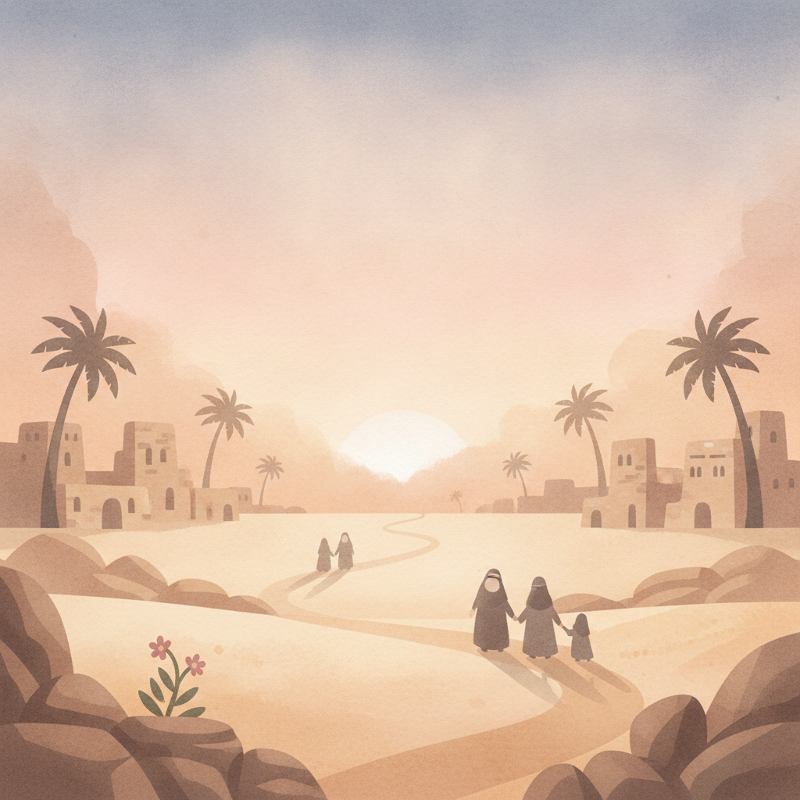
💬Qu'est-ce que cela veut dire ?
Les tout premiers musulmans ont vécu une période très difficile : moqueries, insultes, parfois violence. Malgré cela, ils sont restés fermes dans leur foi, sans répondre par la haine. Cette qualité s'appelle le sabr, la patience active — celle qui garde le cœur calme et digne même face à l'injustice.
Leur exemple nous apprend que la foi demande parfois du courage et de l'endurance, et que la patience est elle-même une grande qualité aux yeux d'Allah.
✦Et toi ?
Penses-tu à un moment où tu as dû être patient(e) face à une moquerie ou une difficulté ? Comment as-tu réagi ? La prochaine fois, essaie de répondre avec calme plutôt qu'avec colère.
✎Activité
Écris ou raconte à un adulte un moment où tu as fait preuve de patience (sabr), et ce que cela t'a appris.
💡Le savais-tu ?
Le mot « sabr » ne veut pas seulement dire « attendre » : il veut dire garder son cœur ferme et calme, même dans les moments difficiles, sans jamais perdre espoir en Allah.
✏Je m'exerce
1. Que veut dire le mot « sabr » ?
Réponse : La patience, garder son cœur calme et ferme face aux difficultés.
2. Comment les premiers musulmans ont-ils été traités à La Mecque ?
Réponse : Ils ont été moqués, insultés, et parfois maltraités à cause de leur foi.
3. Pourquoi n'ont-ils pas abandonné leur foi malgré les difficultés ?
Réponse : Parce qu'ils étaient profondément convaincus dans leur cœur et ont fait preuve de sabr.
★À retenir
« Comme les premiers musulmans, je peux répondre aux difficultés avec patience et un cœur calme. »
✎Vocabulaire
Sabr : la patience, l'endurance face aux difficultés. صَبْر
Semaine 15 · Hadith & Adab
🤝 Bonnes manières
La bonté envers les parentsبِرُّ الْوَالِدَيْن
◎Ce que je vais apprendre
- Découvrir un hadith sur l'importance de la mère et du père.
- Comprendre pourquoi la mère est citée trois fois dans ce hadith.
- Trouver un geste concret de bonté envers mes parents.
✎L'histoire de Nour
« Envers qui dois-je être le plus gentil ? » demande Nour à son père. Il lui raconte alors qu'un homme a posé exactement cette question au Prophète ﷺ : « Ô Messager d'Allah, qui mérite le plus ma bonne compagnie ? » Le Prophète ﷺ a répondu : « Ta mère. » L'homme a demandé : « Et ensuite ? » Il a répondu encore : « Ta mère. » Une troisième fois : « Ta mère. » Et seulement la quatrième fois : « Ton père. »
Nour est surprise : « Pourquoi la mère trois fois ? » « Parce que sa patience, sa fatigue et son amour pour nous, depuis notre naissance, méritent une reconnaissance immense », répond son père.
❝Un hadith du Prophète ﷺ
Un homme demanda au Prophète ﷺ qui méritait le plus sa bonne compagnie. Il répondit : « Ta mère. » — « Et ensuite ? » — « Ta mère. » — « Et ensuite ? » — « Ta mère. » — « Et ensuite ? » — « Ton père. »
D'après Abû Hurayra — Sahîh al-Bukhârî & Sahîh Muslim — rendu en français par nos soins, d'après le sens du hadith
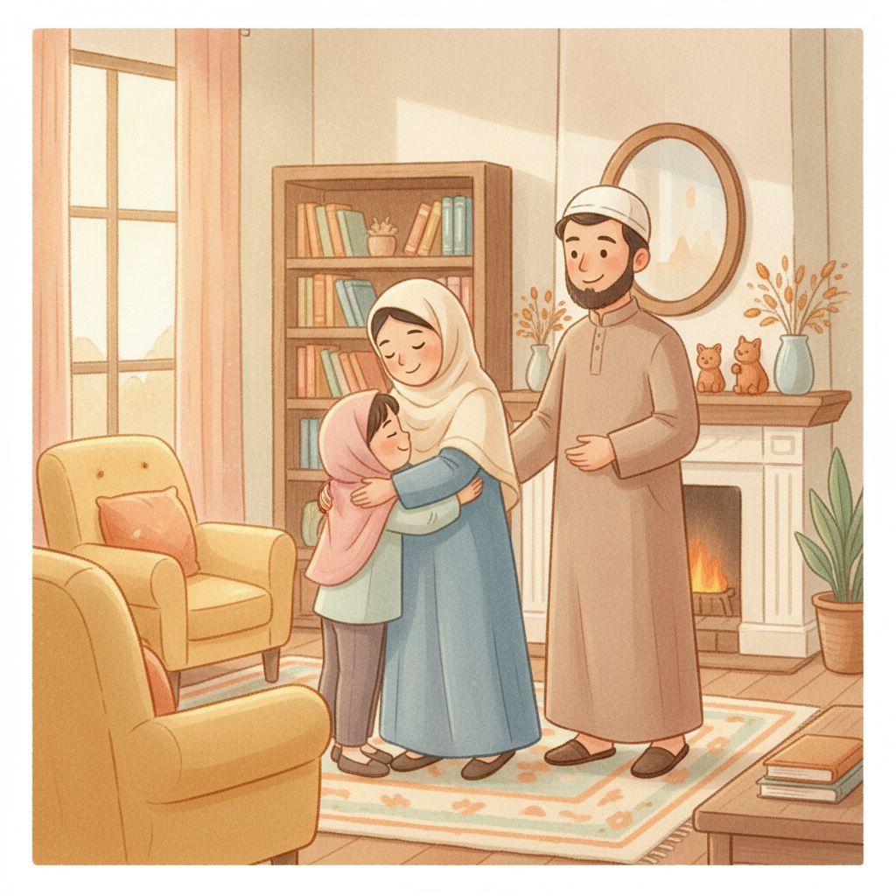
💬Qu'est-ce que cela veut dire ?
Ce hadith nous enseigne que la bonté envers les parents (birr al-wâlidayn) est l'une des actions les plus importantes en Islam, juste après l'adoration d'Allah. La mère est mentionnée trois fois pour souligner l'immensité de ce qu'elle donne : la grossesse, la fatigue, les nuits sans sommeil, l'amour inconditionnel.
Le père, lui aussi, mérite un immense respect et une grande bonté pour tout ce qu'il apporte à la famille.
✦Et toi ?
Aujourd'hui, fais un geste concret de bonté envers ta mère et ton père : un service rendu sans qu'on te le demande, un mot doux, un câlin. Observe ce que cela change dans leur journée.
✎Activité
Écris ou dessine trois choses que tes parents font pour toi chaque jour, et un geste que tu peux faire en retour cette semaine.
💡Le savais-tu ?
En Islam, la bonté envers les parents reste importante toute la vie, même quand on grandit — et même si nos parents ne sont pas musulmans, tant qu'ils ne nous demandent pas de désobéir à Allah.
✏Je m'exerce
1. Dans ce hadith, qui le Prophète ﷺ cite-t-il trois fois ?
Réponse : La mère.
2. Qui est cité en quatrième, après la mère ?
Réponse : Le père.
3. Cite un geste concret de bonté que tu peux faire envers tes parents.
Réponse : Par exemple : aider aux tâches de la maison sans qu'on me le demande, dire une parole douce, un câlin.
★À retenir
« Ma mère et mon père méritent toute ma bonté : je leur montre mon amour par mes gestes chaque jour. »
✎Vocabulaire
Birr al-Wâlidayn : la bonté envers les parents. بِرُّ الْوَالِدَيْن
Semaine 16 · Coran
📗 Le Coran
Le grand fracasالْقَارِعَة
❝Sourate Al-Qâri'a (101)
الْقَارِعَةُ
مَا الْقَارِعَةُ
وَمَا أَدْرَاكَ مَا الْقَارِعَةُ
يَوْمَ يَكُونُ النَّاسُ كَالْفَرَاشِ الْمَبْثُوثِ
وَتَكُونُ الْجِبَالُ كَالْعِهْنِ الْمَنفُوشِ
فَأَمَّا مَن ثَقُلَتْ مَوَازِينُهُ
فَهُوَ فِي عِيشَةٍ رَّاضِيَةٍ
وَأَمَّا مَنْ خَفَّتْ مَوَازِينُهُ
فَأُمُّهُ هَاوِيَةٌ
وَمَا أَدْرَاكَ مَا هِيَهْ
نَارٌ حَامِيَةٌ
Al-Qâri'ah. Mâ-l-Qâri'ah. Wa mâ adrâka mâ-l-Qâri'ah. Yawma yakûnu-n-nâsu kal-farâshi-l-mabthûth. Wa takûnu-l-jibâlu kal-'ihni-l-manfûsh. Fa-ammâ man thaqulat mawâzînuh. Fahuwa fî 'îshatir-râdiyah. Wa-ammâ man khaffat mawâzînuh. Fa-ummuhu hâwiyah. Wa mâ adrâka mâ hiyah. Nârun hâmiyah.
« Le fracas ! Qu'est-ce que le fracas ? Et qui te dira ce qu'est le fracas ? C'est le jour où les gens seront comme des papillons éparpillés, et les montagnes comme de la laine cardée ; quant à celui dont la balance sera lourde, il sera dans une vie agréable ; et quant à celui dont la balance sera légère, sa mère [destination] est un abîme très profond. Et qui te dira ce que c'est ? C'est un Feu ardent. »
Sourate Al-Qâri'a (101), versets 1 à 11 — trad. M. Hamidullah
▶️ Écouter la récitation (playlist Cheikh Al-Husary — Juz 'Amma)
💬Qu'est-ce que cela veut dire ?
« Al-Qâri'a » est l'un des noms du Jour du Jugement : un jour si important et si bouleversant qu'il « frappe » les cœurs et les esprits. La sourate décrit ce jour où chacun sera pesé selon ses actions : celui dont les bonnes actions pèsent lourd vivra dans le bonheur, et celui dont elles pèsent léger connaîtra une grande difficulté.
Cette image de la balance nous rappelle que chaque petite bonne action compte et s'accumule.
✦3 idées essentielles
1Le Jour du Jugement est un événement si important qu'Allah lui donne des noms impressionnants comme « Al-Qâri'a », pour éveiller nos cœurs.
2Ce jour-là, mes actions seront pesées comme sur une balance : chaque petite bonne action compte et a du poids devant Allah.
3Je peux dès aujourd'hui « alourdir ma balance » en multipliant les petites bonnes actions : un sourire, une aide, une parole douce.
Semaine 17 · Aqîda
🕌 Croyance
Les livres révélés par Allahالْكُتُبُ الْمُنَزَّلَة
◎Ce que je vais apprendre
- Découvrir que le Coran n'est pas le seul livre révélé par Allah.
- Connaître les noms de quelques livres révélés avant lui.
- Comprendre pourquoi le Coran est le dernier et le message final.
✎L'histoire de Nour
« Est-ce qu'Allah n'a envoyé que le Coran ? » demande Nour à son professeur. « Non, répond-il. Allah a envoyé plusieurs livres avant le Coran, à différents prophètes : la Tawrât (la Torah) à Moïse, le Zabûr (les Psaumes) à David, l'Injîl (l'Évangile) à Jésus. »
« Alors pourquoi lisons-nous le Coran ? » « Parce que le Coran est le dernier livre révélé, envoyé à notre Prophète Muhammad ﷺ, et Allah nous promet qu'il restera préservé, sans aucune modification, jusqu'à la fin des temps. »
❝Ce que dit le Coran
آمَنَ الرَّسُولُ بِمَا أُنزِلَ إِلَيْهِ مِن رَّبِّهِ وَالْمُؤْمِنُونَ ۚ كُلٌّ آمَنَ بِاللَّهِ وَمَلَائِكَتِهِ وَكُتُبِهِ وَرُسُلِهِ
Âmana-r-rasûlu bimâ unzila ilayhi min rabbihi wal-mu'minûn. Kullun âmana billâhi wa malâ'ikatihi wa kutubihi wa rusulih.
« Le Messager a cru en ce qu'on a fait descendre vers lui venant de son Seigneur, et aussi les croyants : tous ont cru en Allah, en Ses Anges, à Ses Livres et en Ses Messagers. »
Sourate Al-Baqara (2), extrait du verset 285 — trad. M. Hamidullah
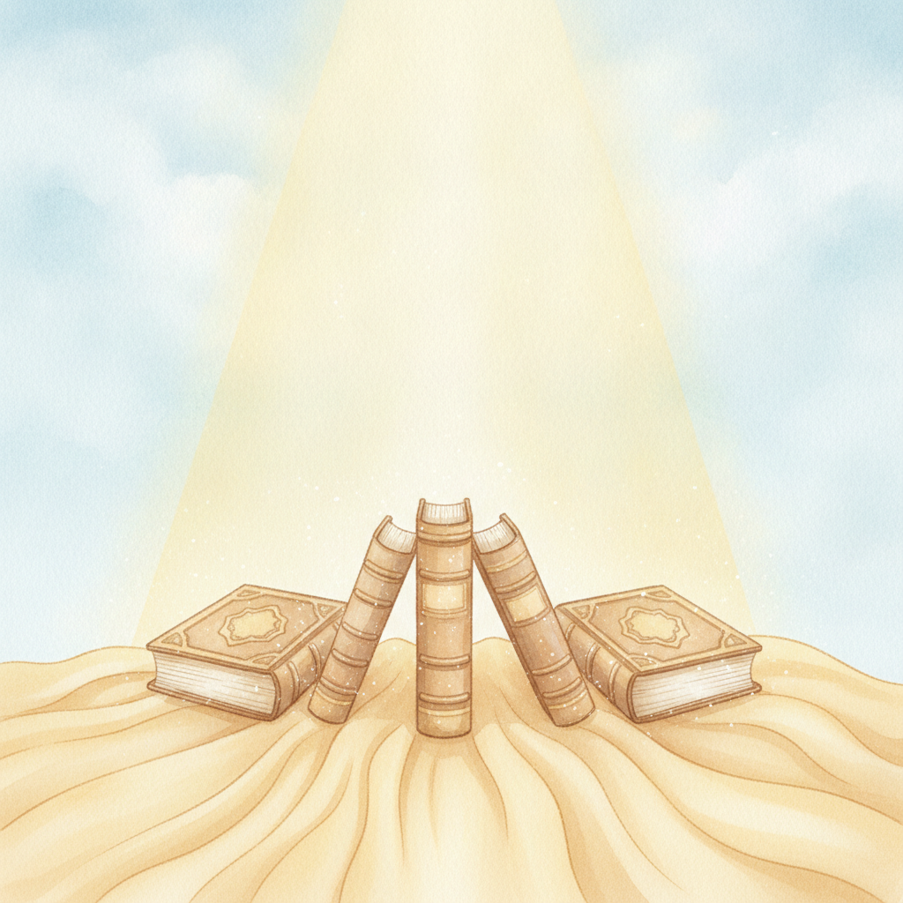
💬Qu'est-ce que cela veut dire ?
Croire aux livres révélés fait partie des fondements de la foi musulmane. Nous croyons que la Tawrât, le Zabûr et l'Injîl étaient, à l'origine, des messages venus d'Allah. Le Coran est le dernier de ces livres, révélé pour confirmer et compléter les messages précédents, et Allah Lui-même s'est engagé à le préserver de toute altération.
✦Et toi ?
Le Coran que tu lis aujourd'hui est exactement le même que celui reçu par le Prophète ﷺ il y a plus de 1400 ans. Prends un moment pour réfléchir à la chance que tu as d'y avoir accès, et remercie Allah pour ce bienfait.
✎Activité
Écris ou dessine les noms des 4 livres révélés cités dans cette leçon : la Tawrât, le Zabûr, l'Injîl et le Coran.
💡Le savais-tu ?
Le Coran est le seul livre saint mémorisé intégralement, mot pour mot, par des millions de musulmans à travers le monde, y compris de jeunes enfants comme toi !
✏Je m'exerce
1. Cite deux livres révélés avant le Coran.
Réponse : Par exemple : la Tawrât (donnée à Moïse) et l'Injîl (donné à Jésus).
2. Quel est le dernier livre révélé par Allah ?
Réponse : Le Coran, révélé au Prophète Muhammad ﷺ.
3. Que promet Allah au sujet du Coran ?
Réponse : De le préserver de toute modification jusqu'à la fin des temps.
★À retenir
« Je crois en tous les livres révélés par Allah, et je suis reconnaissant(e) d'avoir accès au Coran, préservé intact. »
✎Vocabulaire
Tawrât : la Torah, révélée à Moïse. تَوْرَاة
Zabûr : les Psaumes, révélés à David. زَبُور
Injîl : l'Évangile, révélé à Jésus. إِنْجِيل
Semaine 18 · Fiqh
💧 Vie pratique
Le tayammum (ablution sèche)التَّيَمُّم
◎Ce que je vais apprendre
- Découvrir ce qu'est le tayammum et quand on peut l'utiliser.
- Comprendre la miséricorde d'Allah à travers cette facilité.
- Connaître les gestes simples du tayammum.
✎L'histoire de Nour
Pendant un pique-nique en pleine nature, l'heure de la prière arrive, mais il n'y a pas une goutte d'eau à des kilomètres à la ronde. Nour s'inquiète : « Comment vais-je faire mon wudû ? » Son oncle sourit : « Allah a prévu une solution pour ce genre de situation : le tayammum, l'ablution sèche avec de la terre propre. »
Il lui montre alors les deux gestes simples : poser les mains sur une surface propre (terre, sable, pierre), puis les passer sur le visage et les mains. « C'est aussi simple que ça, » dit-il, « Allah ne veut jamais nous mettre en difficulté. »
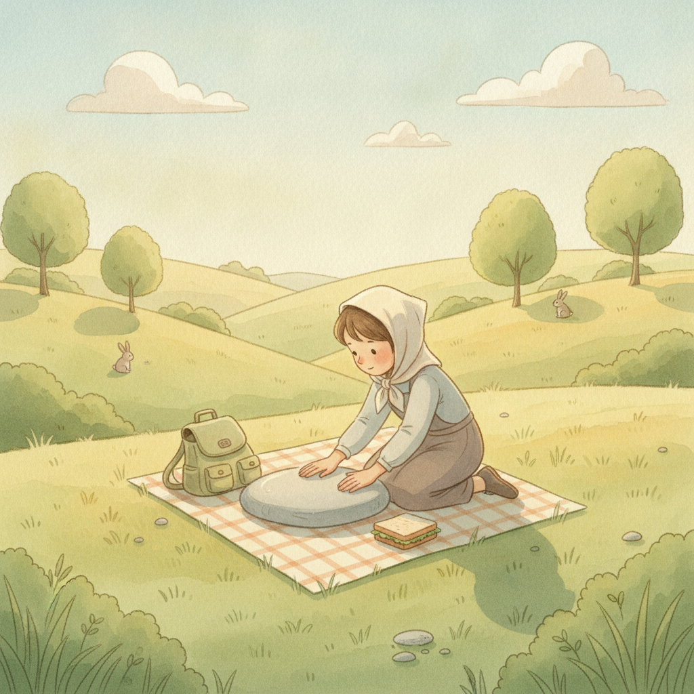
❝Ce que dit le Coran
فَلَمْ تَجِدُوا مَاءً فَتَيَمَّمُوا صَعِيدًا طَيِّبًا فَامْسَحُوا بِوُجُوهِكُمْ وَأَيْدِيكُم مِّنْهُ
Falam tajidû mâ'an fatayammamû sa'îdan tayyiban famsahû biwujûhikum wa aydîkum minh.
« ...et que vous ne trouviez pas d'eau, alors recourez à la terre pure : passez-en sur vos visages et vos mains. »
Sourate Al-Mâ'ida (5), extrait du verset 6 — trad. M. Hamidullah
💬Les gestes du tayammum
1Faire l'intention (niyya) de se purifier pour la prière.
2Poser les deux mains sur une surface propre (terre, sable, pierre, mur propre).
3Passer les mains sur le visage.
4Passer les mains l'une sur l'autre, jusqu'aux poignets.
D'après le Précis de Fiqh Malikite (C. Pabiot) — contenu reformulé et simplifié pour les enfants.
✦Et toi ?
Ce verset se termine en rappelant qu'Allah « ne veut pas vous imposer de gêne, mais Il veut vous purifier ». La prochaine fois que tu penses que « c'est trop difficile », souviens-toi que la religion d'Allah est toujours faite de facilité.
💡Le savais-tu ?
Le tayammum peut aussi être utilisé en cas de maladie, quand l'eau risquerait d'aggraver l'état de santé — une autre marque de la miséricorde d'Allah envers Ses serviteurs.
✏Je m'exerce
1. Qu'est-ce que le tayammum ?
Réponse : Une ablution sèche, faite avec de la terre propre, quand on ne trouve pas d'eau.
2. Sur quelles parties du corps passe-t-on les mains lors du tayammum ?
Réponse : Le visage et les mains.
3. Que nous apprend le tayammum sur la religion d'Allah ?
Réponse : Qu'Allah ne veut jamais nous mettre en difficulté et prévoit toujours une solution simple.
★À retenir
« Quand je ne trouve pas d'eau, je peux faire le tayammum : Allah facilite toujours les choses pour moi. »
✎Vocabulaire
Tayammum : l'ablution sèche avec de la terre propre. تَيَمُّم
Sa'îd : la terre, le sol propre. صَعِيد
Semaine 19 · Sîra
🕋 Vie du Prophète ﷺ
Al-Amîn — digne de confianceالْأَمِين
◎Ce que je vais apprendre
- Découvrir le surnom donné au Prophète ﷺ avant même sa mission.
- Comprendre ce que signifie être digne de confiance.
- Réfléchir à ma propre honnêteté au quotidien.
✎L'histoire de Nour
« Est-ce que les gens de La Mecque connaissaient déjà Muhammad ﷺ avant qu'il devienne prophète ? » demande Nour. « Oui, répond sa maîtresse, et ils l'appelaient même par un surnom très spécial : Al-Amîn, "le digne de confiance". »
Elle raconte alors qu'un jour, la Kaaba devait être reconstruite, et une dispute a éclaté entre les tribus pour savoir qui aurait l'honneur de replacer la Pierre Noire. Pour éviter un conflit, ils ont décidé de faire confiance à la première personne qui entrerait : c'était Muhammad ﷺ. Il a alors proposé une solution juste que tout le monde a acceptée avec joie.
💬Qu'est-ce que cela veut dire ?
Bien avant de recevoir la révélation, Muhammad ﷺ était déjà connu de tous à La Mecque pour son honnêteté exceptionnelle : il ne mentait jamais, rendait toujours ce qu'on lui confiait, et tenait toujours parole. C'est pour cela qu'on lui a donné le surnom d'Al-Amîn.
Cet épisode nous montre que la sincérité et l'honnêteté construisent une réputation solide, reconnue même par ceux qui, plus tard, s'opposeront à son message.
✦Et toi ?
Que dirait-on de toi si on te donnait un surnom basé sur ton comportement ? Choisis une qualité que tu veux développer cette semaine pour que les gens puissent te faire confiance, comme Al-Amîn.
✎Activité
Cette semaine, rends un objet ou tiens une promesse exactement comme convenu, sans oublier ni retarder, pour t'entraîner à être « amîn ».
💡Le savais-tu ?
Même après le début de sa mission, certains opposants du Prophète ﷺ continuaient à lui confier leurs biens précieux à garder, car ils savaient qu'il ne trahirait jamais leur confiance.
✏Je m'exerce
1. Que veut dire le surnom « Al-Amîn » ?
Réponse : « Le digne de confiance ».
2. Pourquoi les gens de La Mecque ont-ils donné ce surnom à Muhammad ﷺ ?
Réponse : Parce qu'il était connu pour son honnêteté et sa fiabilité exceptionnelles.
3. Que s'est-il passé lors de la reconstruction de la Kaaba ?
Réponse : Une dispute a éclaté entre les tribus, et c'est Muhammad ﷺ qui a proposé une solution juste, acceptée par tous.
★À retenir
« Comme le Prophète ﷺ, je veux être digne de confiance dans mes paroles et mes actes. »
✎Vocabulaire
Al-Amîn : le digne de confiance. الْأَمِين
Amâna : ce qui est confié, la fiabilité. أَمَانَة
Semaine 20 · Hadith & Adab
🤝 Bonnes manières
Dire la véritéالصِّدْق
◎Ce que je vais apprendre
- Découvrir un hadith sur les conséquences de la vérité et du mensonge.
- Comprendre le chemin qui mène de la sincérité au Paradis.
- Prendre l'engagement de toujours dire la vérité.
✎L'histoire de Nour
Nour a cassé accidentellement un vase pendant qu'il jouait au ballon dans le salon. Personne n'a rien vu. Il hésite un long moment : dire la vérité et peut-être être grondé, ou se taire et espérer que personne ne le découvre.
Il se souvient alors d'un hadith que son imam lui a enseigné à la mosquée : la sincérité mène toujours vers le bien. Nour va voir sa mère et lui raconte exactement ce qui s'est passé. Elle est fière de son honnêteté, bien plus que fâchée pour le vase.
❝Un hadith du Prophète ﷺ
La sincérité mène à la bonté, et la bonté mène au Paradis. L'homme qui persévère dans la sincérité finit par être inscrit auprès d'Allah comme véridique. Et le mensonge mène à la méchanceté, et la méchanceté mène au Feu.
D'après 'Abdullah Ibn Mas'ûd — Sahîh al-Bukhârî & Sahîh Muslim — rendu en français par nos soins, d'après le sens du hadith
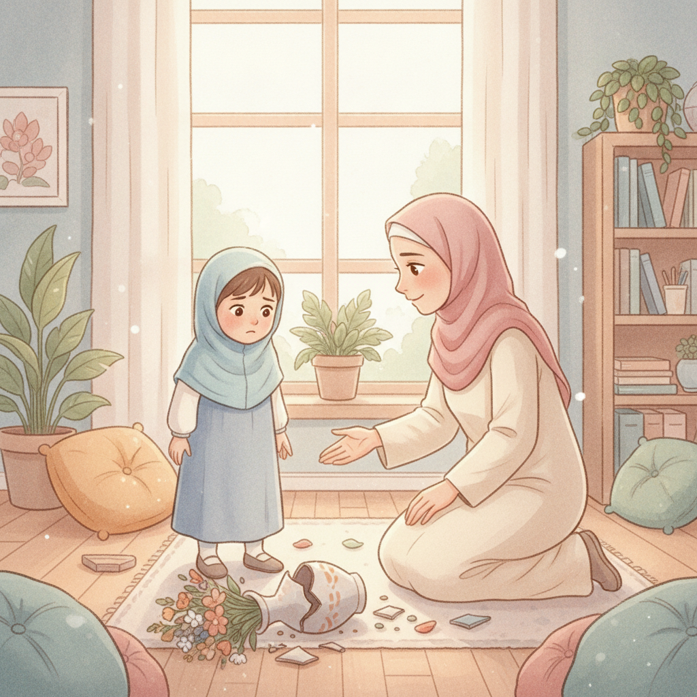
💬Qu'est-ce que cela veut dire ?
Ce hadith nous montre deux chemins opposés : la sincérité (sidq) qui mène à la bonté et finalement au Paradis, et le mensonge (kidhb) qui mène à la méchanceté et finalement au Feu. Dire la vérité n'est pas toujours facile, surtout quand on a peur des conséquences, mais c'est ce choix qui construit un cœur droit.
Une personne qui persévère dans la sincérité devient connue pour cela — comme le Prophète ﷺ lui-même, surnommé Al-Amîn.
✦Et toi ?
La prochaine fois que tu hésites entre dire la vérité et cacher quelque chose, souviens-toi de ce hadith. Même si c'est difficile sur le moment, la sincérité est toujours le bon chemin.
✎Activité
Raconte à un adulte un moment où tu as dit la vérité alors que c'était difficile. Comment t'es-tu senti(e) après ?
💡Le savais-tu ?
Ce hadith fait le lien avec le chapitre sur Al-Amîn : le Prophète ﷺ était justement reconnu pour ne jamais mentir, même avant de devenir prophète.
✏Je m'exerce
1. D'après le hadith, où mène la sincérité ?
Réponse : À la bonté, puis au Paradis.
2. Où mène le mensonge, d'après ce même hadith ?
Réponse : À la méchanceté, puis au Feu.
3. Que fait Nour quand il casse le vase par accident ?
Réponse : Il va voir sa mère et lui dit la vérité, malgré son hésitation.
★À retenir
« La sincérité est toujours le bon chemin, même quand c'est difficile : elle construit un cœur droit. »
✎Vocabulaire
Sidq : la sincérité, la vérité. صِدْق
Kidhb : le mensonge. كِذْب
Semaine 21 · Coran
📗 Le Coran
Les coursiersالْعَادِيَات
❝Sourate Al-'Âdiyât (100)
وَالْعَادِيَاتِ ضَبْحًا
فَالْمُورِيَاتِ قَدْحًا
فَالْمُغِيرَاتِ صُبْحًا
فَأَثَرْنَ بِهِ نَقْعًا
فَوَسَطْنَ بِهِ جَمْعًا
إِنَّ الْإِنسَانَ لِرَبِّهِ لَكَنُودٌ
وَإِنَّهُ عَلَىٰ ذَٰلِكَ لَشَهِيدٌ
وَإِنَّهُ لِحُبِّ الْخَيْرِ لَشَدِيدٌ
أَفَلَا يَعْلَمُ إِذَا بُعْثِرَ مَا فِي الْقُبُورِ
وَحُصِّلَ مَا فِي الصُّدُورِ
إِنَّ رَبَّهُم بِهِمْ يَوْمَئِذٍ لَّخَبِيرٌ
Wal-'âdiyâti dabhâ. Fal-mûriyâti qadhâ. Fal-mughîrâti subhâ. Fa-atharna bihi naq'â. Fawasatna bihi jam'â. Inna-l-insâna lirabbihi lakanûd. Wa innahu 'alâ dhâlika lashahîd. Wa innahu lihubbi-l-khayri lashadîd. Afalâ ya'lamu idhâ bu'thira mâ fi-l-qubûr. Wa hussila mâ fi-s-sudûr. Inna rabbahum bihim yawma'idhin lakhabîr.
« Par les coursiers qui halètent, qui font jaillir des étincelles, qui attaquent au matin, et font ainsi voler la poussière, et pénètrent au centre de la troupe ennemie. L'homme est, certes, ingrat envers son Seigneur ; et pourtant, il est certes, témoin de cela ; et pour l'amour des richesses il est certes ardent. Ne sait-il donc pas que lorsque ce qui est dans les tombes sera bouleversé et que sera dévoilé ce qui est dans les poitrines, ce jour-là, certes, leur Seigneur sera Parfaitement Connaisseur d'eux ? »
Sourate Al-'Âdiyât (100), versets 1 à 11 — trad. M. Hamidullah
▶️ Écouter la récitation (playlist Cheikh Al-Husary — Juz 'Amma)
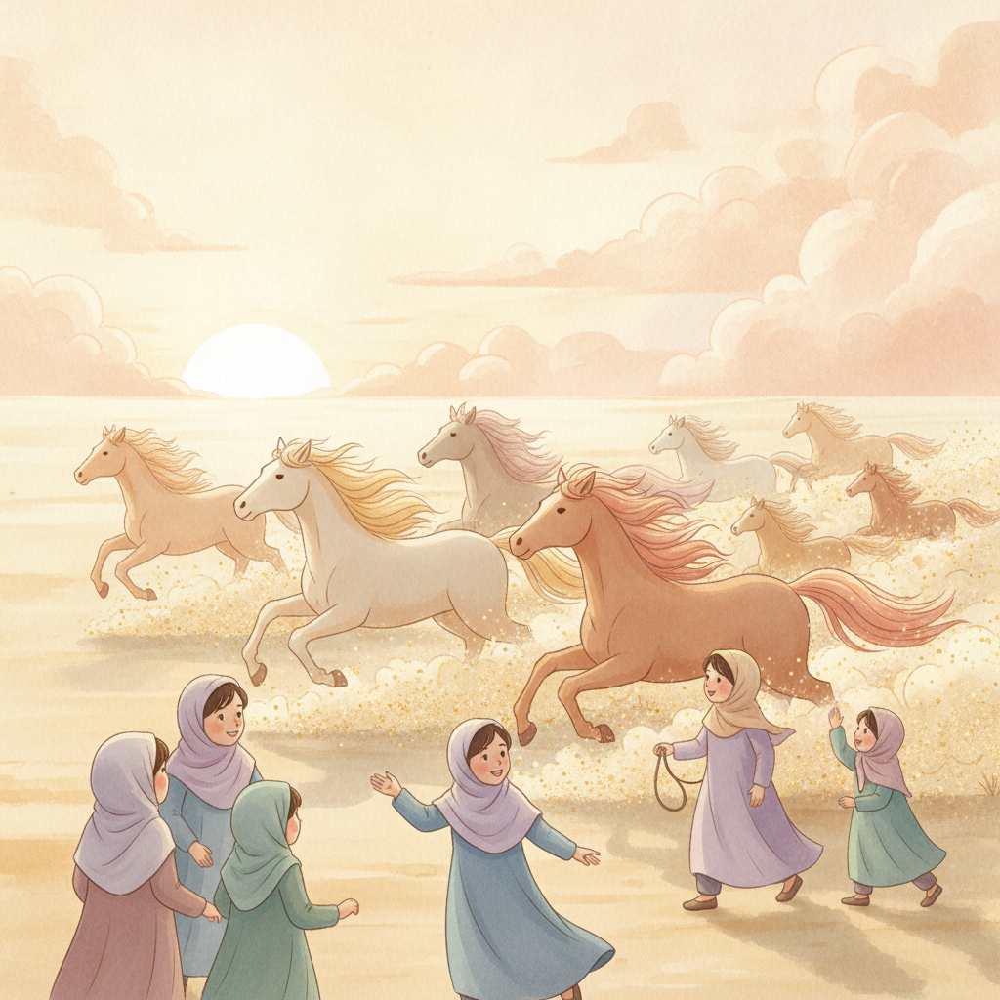
💬Qu'est-ce que cela veut dire ?
Allah jure par les chevaux au galop pour introduire un avertissement important : l'être humain a souvent tendance à être ingrat envers Allah et très attaché aux richesses matérielles. La sourate nous rappelle qu'un jour, tout ce qui est caché — dans les tombes comme dans les cœurs — sera dévoilé devant Allah, qui connaît tout parfaitement.
✦3 idées essentielles
1Il est facile d'oublier de remercier Allah quand tout va bien : cette sourate m'invite à cultiver la gratitude (shukr) plutôt que l'oubli.
2L'attachement excessif aux richesses matérielles peut endurcir le cœur : je garde un cœur détaché et généreux.
3Allah connaît parfaitement ce qui est caché dans mon cœur, même ce que personne d'autre ne voit : je veille à la sincérité de mes intentions.
Semaine 22 · Aqîda
🕌 Croyance
Croire aux prophètes d'Allahالْإِيمَانُ بِالْأَنْبِيَاء
◎Ce que je vais apprendre
- Découvrir qu'Allah a envoyé de nombreux prophètes à travers l'histoire.
- Connaître les noms de quelques-uns d'entre eux.
- Comprendre pourquoi je dois croire en tous les prophètes.
✎L'histoire de Nour
« Muhammad ﷺ est-il le seul prophète envoyé par Allah ? » demande Nour. « Non, répond son professeur. Allah a envoyé un très grand nombre de prophètes, à toutes les époques et dans tous les peuples, pour rappeler aux hommes d'adorer Allah seul : Âdam, Nûh, Ibrâhîm, Mûsâ, 'Îsâ, et bien d'autres. »
« Et Muhammad ﷺ, alors ? » « Il est le dernier d'entre eux, le sceau des prophètes. Son message confirme et clôture celui de tous les prophètes envoyés avant lui. »
❝Ce que dit le Coran
قُلْ آمَنَّا بِاللَّهِ وَمَا أُنزِلَ عَلَيْنَا وَمَا أُنزِلَ عَلَىٰ إِبْرَاهِيمَ وَإِسْمَاعِيلَ وَإِسْحَاقَ وَيَعْقُوبَ وَالْأَسْبَاطِ وَمَا أُوتِيَ مُوسَىٰ وَعِيسَىٰ وَالنَّبِيُّونَ مِن رَّبِّهِمْ لَا نُفَرِّقُ بَيْنَ أَحَدٍ مِّنْهُمْ
Qul âmannâ billâhi wa mâ unzila 'alaynâ wa mâ unzila 'alâ Ibrâhîma wa Ismâ'îla wa Ishâqa wal-Asbâti wa mâ ûtiya Mûsâ wa 'Îsâ wan-nabiyyûna min rabbihim, lâ nufarriqu bayna ahadin minhum.
« Dis : "Nous croyons en Allah, à ce qu'on a fait descendre sur nous, à ce qu'on a fait descendre sur Abraham, Ismaël, Isaac, Jacob et les Tribus, et à ce qui a été apporté à Moïse, à Jésus et aux Prophètes, de la part de leur Seigneur : nous ne faisons aucune différence entre eux." »
Sourate Âl 'Imrân (3), extrait du verset 84 — trad. M. Hamidullah
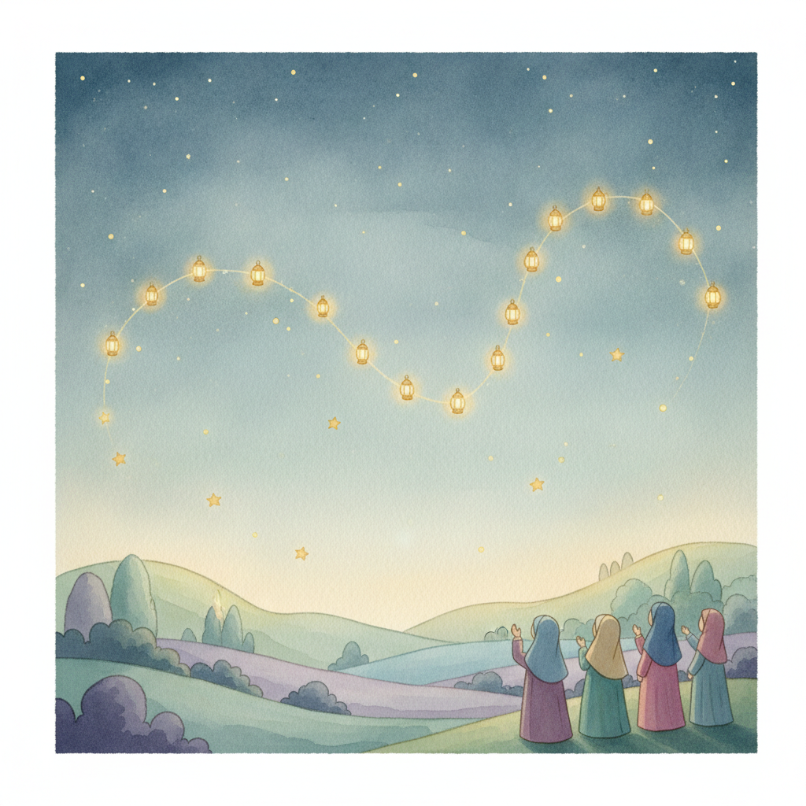
💬Qu'est-ce que cela veut dire ?
Croire aux prophètes fait partie des fondements de la foi musulmane : nous croyons que tous les prophètes envoyés par Allah, depuis Âdam jusqu'à Muhammad ﷺ, ont apporté le même message essentiel — adorer Allah seul. Nous ne faisons aucune différence entre eux dans le respect et la croyance que nous leur portons.
Muhammad ﷺ est le dernier prophète : après lui, aucun autre ne sera envoyé.
✦Et toi ?
Pense à un prophète dont tu as déjà entendu l'histoire (Nûh, Ibrâhîm, Mûsâ...). Quelle qualité de ce prophète aimerais-tu développer toi aussi ?
✎Activité
Écris les noms de 5 prophètes que tu connais déjà, seul(e) ou avec l'aide d'un adulte.
💡Le savais-tu ?
Le Coran mentionne 25 prophètes par leur nom, mais les savants nous enseignent qu'Allah en a envoyé beaucoup plus, à travers toute l'histoire de l'humanité.
✏Je m'exerce
1. Pourquoi Allah a-t-Il envoyé des prophètes ?
Réponse : Pour rappeler aux hommes d'adorer Allah seul.
2. Qui est le dernier prophète envoyé par Allah ?
Réponse : Muhammad ﷺ.
3. Que veut dire « nous ne faisons aucune différence entre eux » ?
Réponse : Que je crois et respecte tous les prophètes envoyés par Allah, sans en préférer un à un autre.
★À retenir
« Je crois en tous les prophètes envoyés par Allah, du premier au dernier, sans faire de différence entre eux. »
✎Vocabulaire
Nabî (pl. Anbiyâ') : prophète(s). نَبِيّ
Khâtam an-Nabiyyîn : le sceau des prophètes (Muhammad ﷺ). خَاتَمُ النَّبِيِّين
Semaine 23 · Fiqh
💧 Vie pratique
Le jeûne du mois de Ramadanصِيَامُ رَمَضَان
◎Ce que je vais apprendre
- Découvrir ce qu'est le jeûne du mois de Ramadan.
- Comprendre pourquoi Allah nous a prescrit le jeûne.
- Connaître les bases simples du jeûne pour m'y préparer.
✎L'histoire de Nour
Chaque année, Nour voit toute sa famille se réveiller avant le lever du soleil pour manger le suhûr, puis attendre patiemment jusqu'au coucher du soleil pour rompre le jeûne (iftâr) ensemble, dans la joie. « Pourquoi jeûnons-nous tout un mois ? » demande Nour à sa grand-mère.
« Parce qu'Allah nous l'a prescrit dans le Coran, comme Il l'avait prescrit aux croyants avant nous, répond-elle. Le jeûne nous apprend la patience, le contrôle de soi, et à ressentir ce que vivent ceux qui manquent de nourriture. »
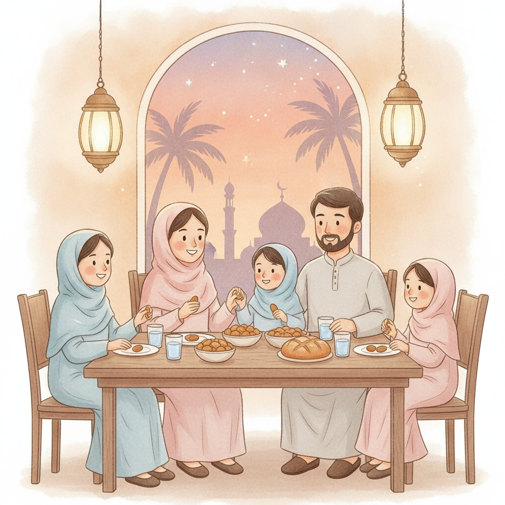
❝Ce que dit le Coran
يَا أَيُّهَا الَّذِينَ آمَنُوا كُتِبَ عَلَيْكُمُ الصِّيَامُ كَمَا كُتِبَ عَلَى الَّذِينَ مِن قَبْلِكُمْ لَعَلَّكُمْ تَتَّقُونَ
Yâ ayyuha-lladhîna âmanû kutiba 'alaykumu-s-siyâmu kamâ kutiba 'alalladhîna min qablikum la'allakum tattaqûn.
« Ô les croyants ! On vous a prescrit le jeûne (as-Siyâm) comme on l'a prescrit à ceux d'avant vous, ainsi atteindrez-vous la piété. »
Sourate Al-Baqara (2), verset 183 — trad. M. Hamidullah
💬Les bases du jeûne
1Faire l'intention (niyya) de jeûner, avant l'aube.
2Ne rien manger ni boire du lever au coucher du soleil.
3Rompre le jeûne (iftâr) dès le coucher du soleil, traditionnellement avec des dattes.
D'après le Précis de Fiqh Malikite (C. Pabiot) — contenu reformulé et simplifié pour les enfants. Le jeûne devient obligatoire à la puberté ; les enfants s'y entraînent progressivement, sans obligation.
✦Et toi ?
Même si le jeûne complet n'est pas encore obligatoire pour toi, tu peux t'entraîner : jeûner une demi-journée, ou choisir d'être particulièrement généreux et patient pendant le mois de Ramadan.
💡Le savais-tu ?
Le Ramadan est le neuvième mois du calendrier musulman, un calendrier lunaire : c'est pour cela que les dates du Ramadan changent chaque année dans notre calendrier habituel.
✏Je m'exerce
1. D'après le verset, à qui d'autre le jeûne a-t-il été prescrit avant nous ?
Réponse : Aux croyants des générations précédentes, avant nous.
2. Que fait-on traditionnellement pour rompre le jeûne ?
Réponse : On mange en général des dattes en premier.
3. Que nous apprend le jeûne, d'après la grand-mère de Nour ?
Réponse : La patience, le contrôle de soi, et à ressentir ce que vivent ceux qui manquent de nourriture.
★À retenir
« Le jeûne du Ramadan m'apprend la patience et me rapproche d'Allah, comme tous les croyants avant moi. »
✎Vocabulaire
Siyâm : le jeûne. صِيَام
Suhûr : le repas pris avant l'aube. سُحُور
Iftâr : la rupture du jeûne, au coucher du soleil. إِفْطَار
Semaine 24 · Sîra
🕋 Vie du Prophète ﷺ
L'Hégire — le départ vers Médineالْهِجْرَة
◎Ce que je vais apprendre
- Découvrir pourquoi le Prophète ﷺ a quitté La Mecque pour Médine.
- Comprendre ce qu'est l'Hégire et pourquoi elle marque le début du calendrier musulman.
- Réfléchir à ce que signifie tout quitter pour rester fidèle à sa foi.
✎L'histoire de Nour
« Pourquoi notre calendrier musulman ne commence-t-il pas à la naissance du Prophète ﷺ ? » demande Nour. « Bonne question, sourit son père. Il commence à un autre moment très important : l'Hégire, le jour où le Prophète ﷺ et ses compagnons ont quitté La Mecque, où ils étaient persécutés, pour aller s'installer à Médine, une ville qui les a accueillis avec joie. »
« Ce voyage n'était pas facile ni sans danger, ajoute-t-il, mais il a marqué un nouveau départ : à Médine, les musulmans ont enfin pu vivre et pratiquer leur foi en sécurité, et bâtir la toute première communauté musulmane. »
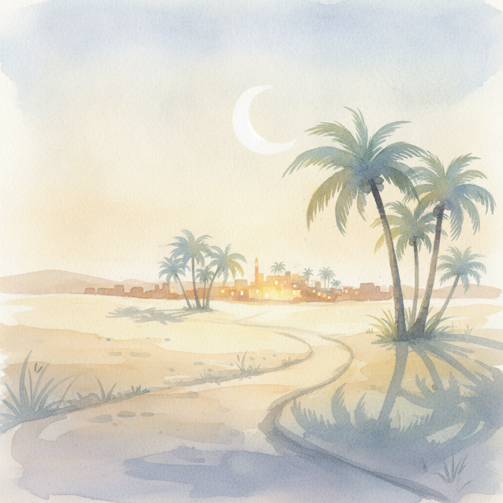
💬Qu'est-ce que cela veut dire ?
L'Hégire (al-Hijra) désigne l'émigration du Prophète ﷺ et des premiers musulmans de La Mecque vers Médine, pour fuir les persécutions et pouvoir pratiquer leur foi librement. Cet événement est si important qu'il marque le point de départ du calendrier musulman (hégirien).
L'Hégire nous enseigne le courage de tout quitter — sa maison, ses biens, ses habitudes — pour rester fidèle à sa foi, et la confiance qu'Allah accompagne toujours ceux qui font des efforts sur Son chemin.
✦Et toi ?
As-tu déjà dû faire un choix difficile pour rester fidèle à tes valeurs, même si c'était inconfortable ? L'exemple de l'Hégire nous rappelle que ces efforts ont toujours une grande valeur devant Allah.
✎Activité
Sur une carte simple ou un dessin, trace le chemin entre La Mecque et Médine, et écris une phrase sur ce que représente ce voyage pour toi.
💡Le savais-tu ?
C'est le calife 'Umar ibn al-Khattâb qui a choisi, après la mort du Prophète ﷺ, de faire commencer le calendrier musulman à partir de l'année de l'Hégire, plutôt qu'à partir de la naissance du Prophète ﷺ.
✏Je m'exerce
1. Que signifie le mot « Hégire » ?
Réponse : L'émigration du Prophète ﷺ et des premiers musulmans de La Mecque vers Médine.
2. Pourquoi les musulmans ont-ils quitté La Mecque ?
Réponse : Pour fuir les persécutions et pouvoir pratiquer leur foi librement.
3. Pourquoi l'Hégire marque-t-elle le début du calendrier musulman ?
Réponse : Parce qu'elle marque un tournant majeur : le début de la première communauté musulmane libre, à Médine.
★À retenir
« L'Hégire m'enseigne le courage de rester fidèle à ma foi, même quand c'est difficile : Allah accompagne toujours ceux qui font des efforts pour Lui. »
✎Vocabulaire
Hijra : l'émigration vers Médine. هِجْرَة
Al-Madîna : Médine, la ville qui a accueilli le Prophète ﷺ. الْمَدِينَة
Semaine 25 · Coran · Clôture de l'année
📗 Le Coran
Le tremblement de terreالزَّلْزَلَة
❝Sourate Az-Zalzalah (99)
إِذَا زُلْزِلَتِ الْأَرْضُ زِلْزَالَهَا
وَأَخْرَجَتِ الْأَرْضُ أَثْقَالَهَا
وَقَالَ الْإِنسَانُ مَا لَهَا
يَوْمَئِذٍ تُحَدِّثُ أَخْبَارَهَا
بِأَنَّ رَبَّكَ أَوْحَىٰ لَهَا
يَوْمَئِذٍ يَصْدُرُ النَّاسُ أَشْتَاتًا لِّيُرَوْا أَعْمَالَهُمْ
فَمَن يَعْمَلْ مِثْقَالَ ذَرَّةٍ خَيْرًا يَرَهُ
وَمَن يَعْمَلْ مِثْقَالَ ذَرَّةٍ شَرًّا يَرَهُ
Idhâ zulzilati-l-ardu zilzâlahâ. Wa akhrajati-l-ardu athqâlahâ. Wa qâla-l-insânu mâ lahâ. Yawma'idhin tuhaddithu akhbârahâ. Bi'anna rabbaka awhâ lahâ. Yawma'idhin yasduru-n-nâsu ashtâtan liyuraw a'mâlahum. Faman ya'mal mithqâla dharratin khayran yarah. Wa man ya'mal mithqâla dharratin sharran yarah.
« Quand la terre tremblera d'un violent tremblement, et que la terre fera sortir ses fardeaux et que l'homme dira : "Qu'a-t-elle ?" Ce jour-là, elle contera son histoire, selon ce que ton Seigneur lui aura révélé. Ce jour-là, les gens sortiront séparément pour que leur soient montrées leurs œuvres. Quiconque fait un bien fût-ce du poids d'un atome, le verra, et quiconque fait un mal fût-ce du poids d'un atome, le verra. »
Sourate Az-Zalzalah (99), versets 1 à 8 — trad. M. Hamidullah
▶️ Écouter la récitation (playlist Cheikh Al-Husary — Juz 'Amma)
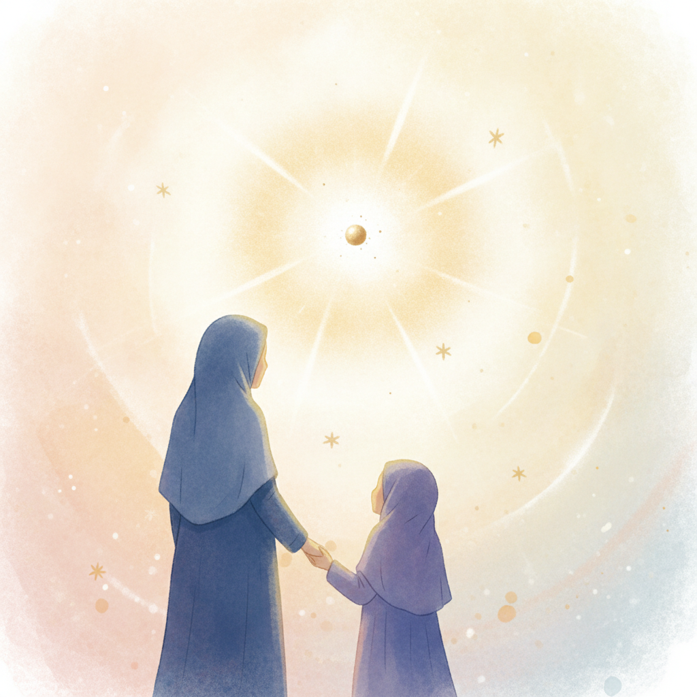
💬Qu'est-ce que cela veut dire ?
Cette sourate décrit le Jour du Jugement, où la terre elle-même témoignera de tout ce qui s'est passé sur elle. Ce jour-là, chaque personne verra clairement ses actions, même celles qui semblaient minuscules, « du poids d'un atome ». Rien de ce que je fais n'est jamais trop petit pour compter devant Allah — ni en bien, ni en mal.
✦3 idées essentielles
1Aucune bonne action n'est trop petite pour compter devant Allah : un sourire, une aide, une parole douce — tout est vu et gardé.
2De même, aucune mauvaise action n'est « sans importance » : je reste attentif(ve) même dans les petites choses de mon quotidien.
3Cette sourate clôt une année de découvertes : comme la terre racontera son histoire, je peux moi aussi me rappeler tout ce que j'ai appris cette année pour continuer à grandir dans ma foi.
🌙Fin de l'année
« Cette année, j'ai découvert 6 sourates, des noms d'Allah, des moments de la vie du Prophète ﷺ, des gestes de la vie pratique et des hadiths precieux. Chaque petite bonne action que j'ai apprise à poser compte devant Allah — je continue sur ce chemin l'année prochaine, in shâ' Allah. »
🎉 Fin du manuel de la 3ème année (Cycle 2, année 1) — les 25 semaines sont rédigées. Rendez-vous l'année prochaine pour la 4ème année !